<!doctype html>
<html lang="en">
<head>
  <meta charset="utf-8">
  <meta name="viewport" content="width=device-width, initial-scale=1">
  <title>arxiv digest — 2026-10-07</title>
  <style>
:root {
  --bg: #ffffff;
  --fg: #1f2328;
  --muted: #59636e;
  --border: #d0d7de;
  --card: #f6f8fa;
  --link: #0969da;
}
body {
  max-width: 980px;
  margin: 0 auto;
  padding: 2rem 1rem 5rem;
  font-family: -apple-system, BlinkMacSystemFont, "Segoe UI", Helvetica, Arial, sans-serif;
  line-height: 1.55;
  color: var(--fg);
  background: var(--bg);
}
a { color: var(--link); }
img { max-width: 100%; height: auto; }
pre, code { background: var(--card); border-radius: 6px; }
pre { padding: 1rem; overflow-x: auto; }
blockquote { border-left: 4px solid var(--border); padding-left: 1rem; color: var(--muted); }
details { margin: 0.6rem 0; }
summary { cursor: pointer; font-weight: 600; }
.paper-figures-scroll {
  display: flex;
  gap: 1rem;
  overflow-x: auto;
  overscroll-behavior-x: contain;
  padding: 0.75rem 0.25rem 1rem;
  margin: 1rem 0 1.25rem;
  border-top: 1px solid var(--border);
  border-bottom: 1px solid var(--border);
  scroll-snap-type: x proximity;
}
.paper-figure-card {
  flex: 0 0 min(260px, 72vw);
  scroll-snap-align: start;
  background: var(--card);
  border: 1px solid var(--border);
  border-radius: 12px;
  padding: 0.55rem;
}
.paper-figure-card img {
  display: block;
  width: 100%;
  max-height: 240px;
  object-fit: contain;
  background: white;
  border-radius: 8px;
}
.paper-figure-caption {
  display: block;
  margin-top: 0.5rem;
  color: var(--muted);
  font-size: 0.85rem;
}
.figure-strip-hint {
  color: var(--muted);
  font-size: 0.9rem;
  margin-bottom: -0.3rem;
}
</style>
  <!-- MathJax: renders $...$ inline math and $$...$$ display math, plus
       \(...\) and \[...\]. Loaded from the official CDN; works offline
       once cached. Configured to skip code/pre blocks so arxiv IDs that
       look like dollar amounts don't get mangled. -->
  <script>
    window.MathJax = {
      tex: {
        inlineMath: [['$', '$'], ['\\(', '\\)']],
        displayMath: [['$$', '$$'], ['\\[', '\\]']],
        processEscapes: true,
        processEnvironments: true
      },
      options: {
        skipHtmlTags: ['script', 'noscript', 'style', 'textarea', 'pre', 'code'],
        ignoreHtmlClass: 'tex2jax_ignore',
        processHtmlClass: 'tex2jax_process'
      }
    };
  </script>
  <script id="MathJax-script" async
    src="https://cdn.jsdelivr.net/npm/mathjax@3/es5/tex-chtml.js"></script>
</head>
<body>
<header style="background-color: #333; color: white; padding: 15px; margin-bottom: 20px;">
  <h1 style="margin: 0; font-size: 24px;">
    <a href="https://ochelpan.github.io/arXiv_clean/" style="color: white; text-decoration: none;">Main</a>
  </h1>
</header>

<h1>Daily arXiv Report</h1>

<hr>
<p>
<a href="index.html">← Index</a>
 · <a href="papers_02.html">← Previous</a> · <a href="papers_04.html">Next →</a>
</p>
<hr>

<h2>Papers 41–60</h2>
<p><a id="paper-2610.03869"></a></p>
<h3 id="modular-neural-decoder-for-surface-code-memory-and-logic-on-superconducting-processors"><a href="http://arxiv.org/abs/2610.03869v1">Modular Neural Decoder for Surface Code Memory and Logic on Superconducting Processors</a></h3>
<p><strong>Authors:</strong> Moritz Lange, Ole Fjeldså, Gustaf Jonasson Johansson, Mats Granath<br>
<strong>Type:</strong> both · <strong>Category:</strong> quantum information and computing · <strong>PDF:</strong> <a href="https://arxiv.org/pdf/2610.03869v1">https://arxiv.org/pdf/2610.03869v1</a><br>
<strong>Analysis basis:</strong> full PDF text, analyzed in chunks
<strong>Topic relevance:</strong> 🔥 <code>QC/QI experiment</code> <strong>4/5</strong> · <code>quantum measurements</code> <strong>1/5</strong></p>
<div class="figure-strip-hint">↔ Scroll figures horizontally</div>
<div class="paper-figures-scroll">
<figure class="paper-figure-card">
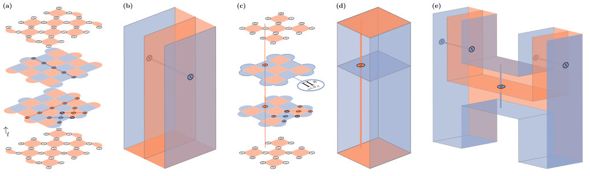
<figcaption class="paper-figure-caption"><b>Fig 1.</b> FIG. 1. Surface code patches (a,c) and their spacetime pictures (b,d,e) [29]. Orange (blue) faces are Z(X)-type boundaries and logical surfaces; the latter represent the tracked logical observable. (a,b) Memory-Z experiment: the Z-basis initialization and measurement form Z-type temporal boundaries, and the tracked ZL surface spans the full duration of the experiment (top and front Z-faces omitted for clarity). (c,d) Stability experiment: the patch has X-type boundary stabilizers on all four spatial sides, and the tracked surface is instead an X-stabilizer product lying flat in space, at a single round (front X-face omitted for clarity). (e) ZZ-merge: two patches, each initialized in |+⟩and...</figcaption>
</figure>
<figure class="paper-figure-card">
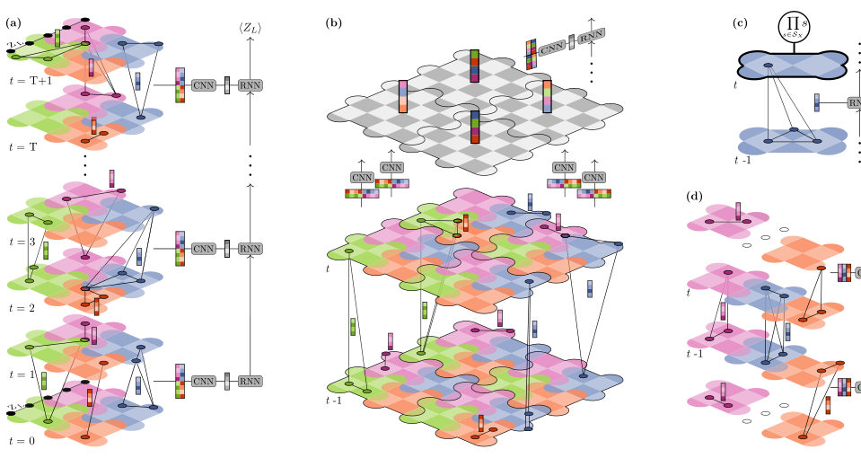
<figcaption class="paper-figure-caption"><b>Fig 2.</b> FIG. 2. Modular neural decoder for (a) a d = 5 memory experiment, (b) a d = 9 memory experiment, (c) a stability experiment, and (d) a ZZ merge. Colors distinguish the overlapping d = 3 tiles. Within each ∆t = 2 temporal window, the detection events of each tile form a graph, which a shared GNN encodes into a single vector (colored bars). (a) A 2 × 2 convolution (CNN) aggregates the four tile encodings into one embedding per window; an RNN (GRU) integrates these over time, and a linear head predicts the logical-flip probability (black nodes: support of ZL). (b) At d = 9 the construction is nested: four d = 5 modules as in (a), each covering four d = 3 tiles, produce embeddings that a second...</figcaption>
</figure>
<figure class="paper-figure-card">
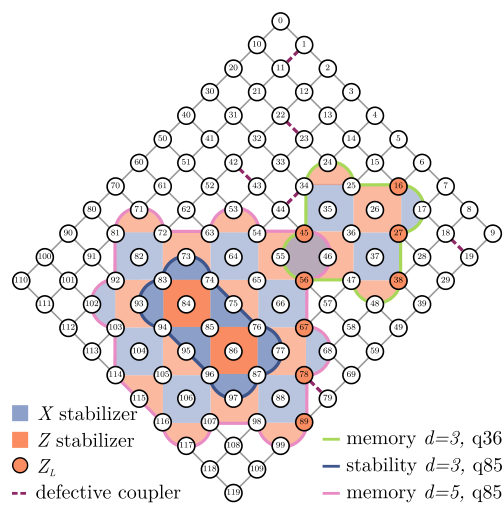
<figcaption class="paper-figure-caption"><b>Fig 3.</b> FIG. 3. Placement of the surface code patches on the ibm berlin qubit grid, numbered by physical index. White circles: data qubits; orange/blue tiles: Z/X-type measure qubits. Dashed purple lines mark couplers found dead or de- graded during our hardware runs. Shaded regions: the d = 5 memory patch (q85) (pink boundary, its inner-core d = 3 memory patch omitted for clarity), the independent d = 3 memory patch (q36) (green boundary), and the d = 3 stabil- ity patch (blue boundary). Qubits on which we define and measure the logical Z are marked in orange.</figcaption>
</figure>
<figure class="paper-figure-card">
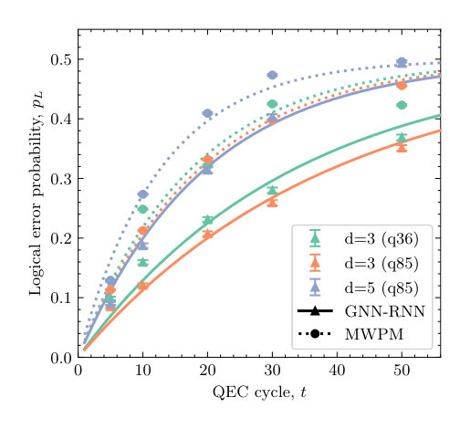
<figcaption class="paper-figure-caption"><b>Fig 4.</b> FIG. 4. Logical error rate versus experiment duration for surface code memory experiments on IBM hardware (ibm berlin), GNN-RNN (solid, triangles) versus MWPM (dotted, circles) on the identical held-out hardware shots, for three patches: d = 3 (q36), d = 3 (q85), and d = 5 (q85).</figcaption>
</figure>
<figure class="paper-figure-card">
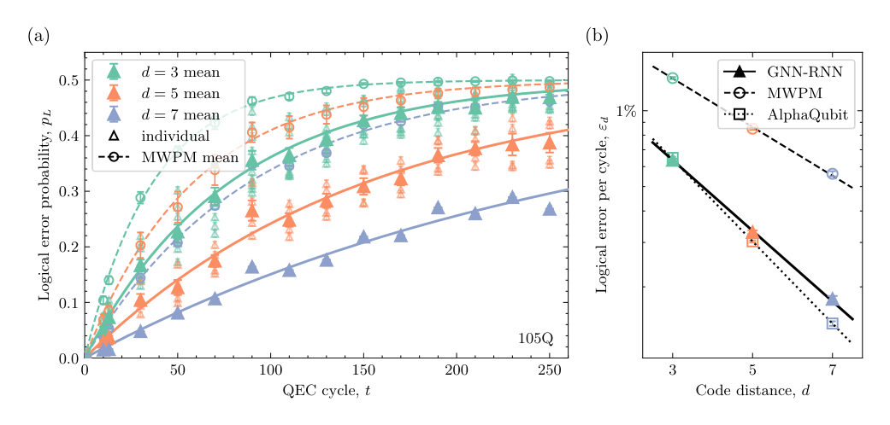
<figcaption class="paper-figure-caption"><b>Fig 5.</b> FIG. 5. (a) Logical error probability pL versus QEC cycles t and (b) logical error per round ε versus code distance d on the Google surface code memory data (Z basis), after the full Stage-1/2/3 fine-tuning pipeline, against an MWPM baseline (patch mean, decoded on the same calibrated pij detector error models) and Google’s own AlphaQubit numbers.</figcaption>
</figure>
</div>

<p><strong>Summary.</strong> This paper presents a modular neural decoder designed to solve the challenge of making quantum error correction decoders portable across different hardware and logical operations. By using a reusable graph-recurrent architecture, the decoder successfully outperforms classical methods like MWPM on real superconducting hardware for memory, stability, and lattice surgery tasks. This demonstrates a significant step toward fault-tolerant quantum computation.</p>
<p><strong>Why it may be interesting.</strong> The focus on hardware-agnostic, modular decoding techniques is crucial for scaling quantum computation, providing a blueprint for robust error mitigation across diverse physical implementations.</p>
<details>
<summary>Detailed structure</summary>
<p><strong>Main problem.</strong> Developing a quantum error correction (QEC) decoder that is portable across different hardware platforms, noise conditions, and various logical operations beyond standard memory decoding.</p>
<p><strong>Main result.</strong> The modular decoder outperforms Minimum-Weight Perfect Matching (MWPM) on real superconducting hardware for memory, stability, and lattice surgery tasks, demonstrating portability across different code observables.</p>
<p><strong>Method.</strong> The authors introduce a modular graph-recurrent decoder architecture, which is pretrained in simulation and fine-tuned to hardware using a common pipeline.</p>
<p><strong>Model / system.</strong> The work focuses on superconducting processors implementing the surface code. The decoder is designed to handle syndrome measurements from memory tracking, X-type stability checks, and ZZ-merge lattice surgery.</p>
<p><strong>Key observables.</strong> Logical observable preservation ($Z_L$), inferred stabilizer products ($\prod X$-stabilizers), and the decoded correlation outcome of lattice surgery (ZZ parity).</p>
<p><strong>Important parameters / regimes.</strong> Code distances ($d=3, 5, 9$), measurement error rates (tunable), and the specific type of logical operation being measured.</p>
<p><strong>Assumptions / limitations.</strong> The decoder assumes a renormalization-style decomposition of the lattice and that the input syndrome graph structure can be kept consistent across different experimental settings.</p>
<p><strong>Figures summary.</strong> Figures illustrate the surface code patches and their spacetime representations for Memory-Z, X-type Stability, and ZZ-merge lattice surgery, showing how the single decoder handles these different physical scenarios.</p>
<p><strong>Paper structure.</strong> The paper progresses by first establishing the need for portable decoders, introducing the modular GNN-RNN architecture, and then validating its performance across three increasingly complex tasks: basic memory decoding, continuous stability monitoring, and complex lattice surgery operations.</p>
</details>
<details>
<summary>Abstract</summary>
<p>Neural decoders for quantum error correction have achieved high accuracy on surface code memory experiments, but practical fault-tolerant computation requires decoders that transfer across devices, noise conditions, and logical operations. We introduce a modular graph-recurrent decoder designed for this setting. Built from reusable local syndrome encoders, it is pretrained in simulation and fine-tuned to hardware using a common pipeline, with only lightweight spatial aggregation adapted between experiments. The decoder performs competitively on conventional memory benchmarks, outperforming minimum-weight perfect matching (MWPM) at distances 3 and 5 on an IBM Nighthawk-generation processor and closely approaching AlphaQubit on Google's below-threshold hardware data. We then test the framework in two settings beyond memory decoding on the same IBM device. First, in an $X$-type stability experiment, we continuously tune the effective measurement error rate using a variable pre-readout rotation and train a single decoder jointly across the resulting noise range. It matches or outperforms MWPM across the sweep without requiring a separately calibrated decoder for each setting. Second, we decode a $ZZ$-merge lattice-surgery experiment between two distance-3 surface-code patches, improving the decoded correlation between the merge outcome and the final $ZZ$ parity relative to MWPM on real hardware. Together, these experiments demonstrate neural decoding that is portable not only across hardware, but also across qualitatively different surface code observables and logical operations, using models trainable on single-GPU academic resources.</p>
</details>
<p><sub><a href="#top">↑ back to top</a></sub></p>

<p><a id="paper-2610.04556"></a></p>
<h3 id="the-collapse-time-of-weak-measurement-on-math293math-entangled-sites"><a href="http://arxiv.org/abs/2610.04556v1">The collapse time of weak measurement on $N$ entangled sites</a></h3>
<p><strong>Authors:</strong> Truong-Son P. Van, David W. Snoke<br>
<strong>Type:</strong> theory · <strong>Category:</strong> quantum information and computing · <strong>PDF:</strong> <a href="https://arxiv.org/pdf/2610.04556v1">https://arxiv.org/pdf/2610.04556v1</a><br>
<strong>Analysis basis:</strong> full PDF text, analyzed in chunks
<strong>Topic relevance:</strong> 🔥 <code>quantum measurements</code> <strong>4/5</strong> · <code>correlated / nonlocal dissipation</code> <strong>1/5</strong></p>
<div class="figure-strip-hint">↔ Scroll figures horizontally</div>
<div class="paper-figures-scroll">
<figure class="paper-figure-card">
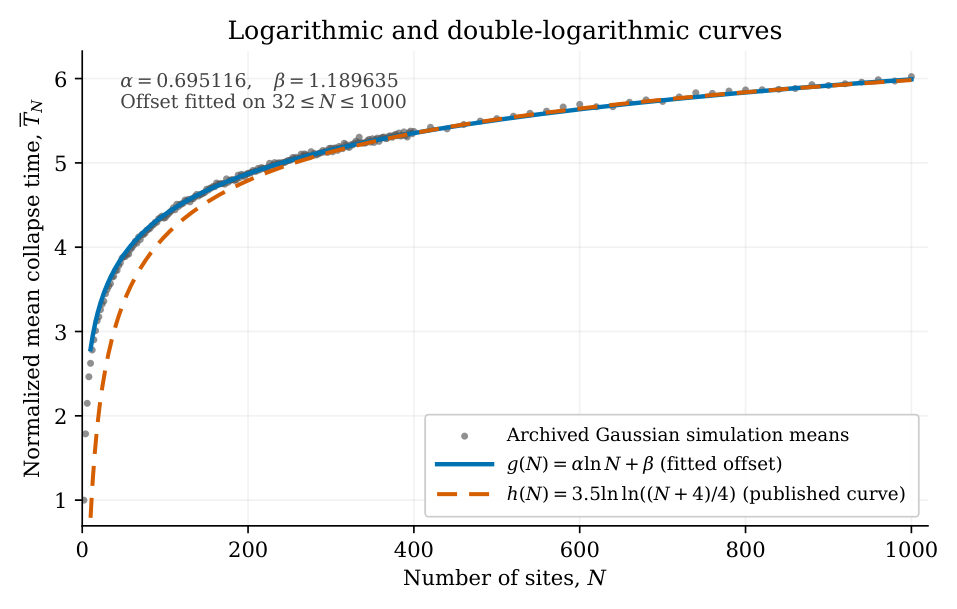
<figcaption class="paper-figure-caption"><b>Fig 1.</b> FIG. 1. The archived Gaussian simulation means from [1], divided by the two-site mean ⟨T2⟩as in</figcaption>
</figure>
</div>

<p><strong>Summary.</strong> This theoretical paper calculates the time required for weak measurements to collapse an initial superposition of $N$ quantum states down to a single outcome. It rigorously proves that this collapse time scales linearly with $\ln N$, correcting previous theoretical estimates. The results are significant for understanding the dynamics of measurement back-action in entangled quantum systems.</p>
<p><strong>Why it may be interesting.</strong> This work provides precise scaling laws for measurement-induced collapse in entangled quantum systems, which is crucial for understanding measurement back-action in quantum computation and quantum sensing.</p>
<details>
<summary>Detailed structure</summary>
<p><strong>Main problem.</strong> The paper determines the time scale required for local weak measurements to collapse the occupation probability of an initial superposition of $N$ alternatives down to a single occupied site.</p>
<p><strong>Main result.</strong> The collapse time $T_N$ scales asymptotically as $T_N / \ln N 	o 1/2$ in $L^1$, correcting previous estimates of double-logarithmic scaling.</p>
<p><strong>Method.</strong> The analysis uses stochastic differential equations for the occupation weights, martingale theory, and bounding techniques derived from information theory (entropy).</p>
<p><strong>Model / system.</strong> The system models a single excitation initially superposed equally among $N$ entangled sites, where local weak measurements continuously monitor the occupation probability of each site.</p>
<p><strong>Key observables.</strong> Collapse time $T_N$, occupation probabilities $w_n(t)$, and the system entropy $H(t)$.</p>
<p><strong>Important parameters / regimes.</strong> The number of sites $N$, the confidence threshold $\delta$, and the characteristic measurement time $    au_m$.</p>
<p><strong>Assumptions / limitations.</strong> The initial occupation probabilities are assumed to be equal ($1/N$), and the analysis relies on the weights being bounded martingales.</p>
<p><strong>Figures summary.</strong> Figure 1 compares simulated Gaussian means against theoretical curves, showing the proposed logarithmic fit has a significantly lower Root-Mean-Square Deviation than previously published double-logarithmic curves.</p>
<p><strong>Paper structure.</strong> The paper develops the evolution equations for the weights, establishes bounds on the collapse time using martingale theory, proves the asymptotic scaling law, and finally addresses the reliability of the first crossing event.</p>
</details>
<details>
<summary>Abstract</summary>
<p>We determine the time required for local weak measurements to collapse to one occupied site in an initial superposition of $N$ alternatives in the model of PRA 111, 032217 (2025). For equal initial occupation probabilities and a fixed confidence threshold $1-δ$, we prove $T_N/\ln N\to1/2$ in $L^1$, with time measured in units of the characteristic measurement time $τ_m$ of each detector. We also connect the asymptotic stabilization theorem of that work to a finite measurement: the first site to reach $1-δ$ is the eventual outcome with conditional probability exactly $1-δ$. The result corrects the previously proposed double-logarithmic asymptotic scaling. The finite-range numerical fit does not determine a constant asymptotic correction or a precise finite-$N$ law.</p>
</details>
<p><sub><a href="#top">↑ back to top</a></sub></p>

<p><a id="paper-2610.05469"></a></p>
<h3 id="fragmented-and-symmetry-restored-condensates-in-a-three-site-bose-ring-exchange-versus-umklapp"><a href="http://arxiv.org/abs/2610.05469v1">Fragmented and symmetry-restored condensates in a three-site Bose ring: exchange versus umklapp</a></h3>
<p><strong>Authors:</strong> A. Siddiki<br>
<strong>Type:</strong> theory · <strong>Category:</strong> quantum gases · <strong>PDF:</strong> <a href="https://arxiv.org/pdf/2610.05469v1">https://arxiv.org/pdf/2610.05469v1</a><br>
<strong>Analysis basis:</strong> full PDF text, analyzed in chunks
<strong>Topic relevance:</strong> 🔥 <code>analog quantum simulation</code> <strong>4/5</strong></p>
<div class="figure-strip-hint">↔ Scroll figures horizontally</div>
<div class="paper-figures-scroll">
<figure class="paper-figure-card">
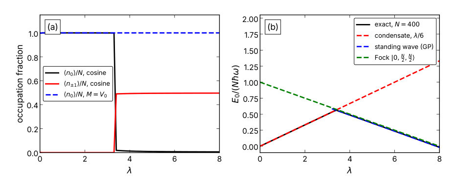
<figcaption class="paper-figure-caption"><b>Fig 1.</b> Figure 1: Ground state of Eq. (1) for N = 400 and c = 0. (a) Occupation fractions ⟨n0⟩/N (black) and ⟨n±1⟩/N (red) versus coupling, and ⟨n0⟩/N for a momentum-independent vertex M = V0 = 1 (blue dashed). (b) Ground-state energy per particle: exact diagonalisation (black), the q = 0 condensate (red dashed), the minimised GP standing wave of Eq. (5) (blue dashed), and the Fock state |0, N/2, N/2⟩ (green dashed).</figcaption>
</figure>
<figure class="paper-figure-card">
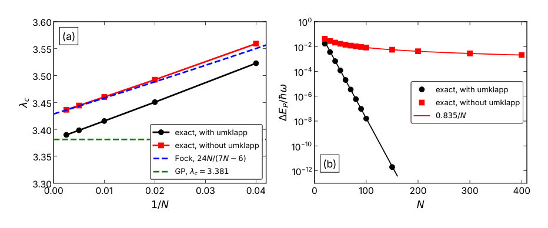
<figcaption class="paper-figure-caption"><b>Fig 2.</b> Figure 2: (a) Critical coupling versus 1/N from exact diagonalisation with umklapp (black circles) and without umklapp (red squares), compared with the Fock-state crossing, Eq. (6) (blue dashed), and the GP critical coupling λGP c = 3.381 (green dashed). (b) Splitting ∆EP between the lowest states of the three momentum sectors P = 0, 1, 2 at λ = 5, with umklapp (black circles; line: ∝e−0.178N, fitted for 40 ≤N ≤100; for N ≳150 the splitting is below the solver tolerance) and without umklapp (red squares; line: 0.835/N).</figcaption>
</figure>
<figure class="paper-figure-card">
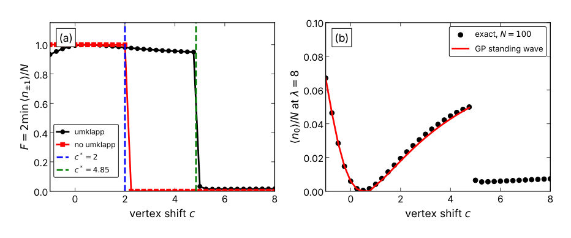
<figcaption class="paper-figure-caption"><b>Fig 3.</b> Figure 3: Test of the mechanisms by a constant shift c of the vertex, Eq. (2), at λ = 8 and N = 100. (a) Fragmentation F = 2 min⟨n±1⟩/N with umklapp (black) and without umklapp (red), with the exchange boundary c∗= 2 (blue dashed) and the GP boundary with umklapp, c∗= 4.85 (green dashed). (b) q = 0 admixture ⟨n0⟩/N of the exact ground state (symbols) and of the minimised GP standing wave (red).</figcaption>
</figure>
</div>

<p><strong>Summary.</strong> This work studies interacting bosons on a three-site ring to distinguish between symmetry-restored condensates and fragmented quantum states. By comparing models with and without Umklapp scattering, the authors show that Umklapp terms stabilize the condensate, while the absence of these terms allows the system to enter a highly fragmented state under specific interaction conditions.</p>
<p><strong>Why it may be interesting.</strong> It provides a detailed, quantitative comparison of how different symmetry-breaking mechanisms (exchange vs. Umklapp) dictate the nature of quantum ground states in interacting bosonic systems, which is highly relevant to understanding superfluidity and quantum magnetism in cold atom setups.</p>
<details>
<summary>Detailed structure</summary>
<p><strong>Main problem.</strong> The paper investigates the transition between different ground states (condensate vs. fragmented state) in a Bose ring, specifically comparing the roles of 'exchange' versus 'Umklapp' scattering mechanisms.</p>
<p><strong>Main result.</strong> The presence of Umklapp scattering stabilizes the standing wave condensate, leading to a number-squeezed state, whereas its absence allows for a transition to a robustly fragmented Fock state when interactions are attractive.</p>
<p><strong>Method.</strong> The study employs exact diagonalization up to N=400 and analyzes the large-N limit using coherent-state functional minimization and Bogoliubov theory.</p>
<p><strong>Model / system.</strong> The system is $N$ bosons on a three-site ring, modeled by a Hamiltonian involving nearest-neighbor hopping, density-assisted hopping, and on-site interactions, analyzed via momentum modes $q \in \{0, \pm 1\}$.</p>
<p><strong>Key observables.</strong> Fragmentation ($F$), ground-state occupations ($\langle n_q 
angle/N$), and the critical coupling ($\lambda_c$) determining the phase transition.</p>
<p><strong>Important parameters / regimes.</strong> The number of bosons ($N$), the coupling strength ($\lambda$), and the relative importance of Umklapp versus exchange terms.</p>
<p><strong>Assumptions / limitations.</strong> The analysis relies on comparing exact diagonalization results with large-N mean-field approximations (Gross-Pitaevskii theory).</p>
<p><strong>Figures summary.</strong> Figures illustrate ground-state occupations vs. coupling, comparisons between exact and variational energies, and the dependence of critical couplings on $1/N$ for both Umklapp and non-Umklapp cases.</p>
<p><strong>Paper structure.</strong> The paper systematically analyzes the Hamiltonian, first establishing the general transition, then isolating the 'no-umklapp' case to study the exchange mechanism, and finally including umklapp terms to contrast the resulting symmetry-restored condensate with the fragmented state.</p>
</details>
<details>
<summary>Abstract</summary>
<p>We study $N$ bosons on a three-site ring with nearest-neighbour hopping, density-assisted hopping of the opposite sign, and an on-site interaction, written equivalently as three momentum modes $q=0,\pm1$ with a channel-dependent quartic vertex. As the density-assisted term grows it inverts the band, and exact diagonalisation up to $N=400$ shows a first-order ground-state transition from the $q=0$ condensate to a state with $\avg{n_{+1}}=\avg{n_{-1}}\simeq N/2$; the avoided-crossing gap closes faster than exponentially with $N$. In its symmetric eigenstates this state is fragmented in the Penrose-Onsager sense, and at leading order in $N$ it has the energy of a Gross-Pitaevskii (GP) standing wave, as expected for a few-mode mean-field system. We distinguish two cases by switching off umklapp scattering, which is available because $2\cdot(+1)\equiv-1$ on three sites, and by varying the on-site interaction. Without umklapp, $n_{+1}-n_{-1}$ is conserved, the eigenstates form a rotor tower whose lowest member is a fragmented Fock state, and the transition leads to fragmentation exactly when the $\pm1$ interaction is attractive, as predicted by Nozières' exchange argument with the sign of the interaction reversed; otherwise the system forms a single current-carrying condensate. With umklapp, the standing wave is pinned to three positions, the three momentum sectors become degenerate exponentially in $N$, and coherent admixture of the $q=0$ mode stabilises the standing wave over a wider range; the exact ground state is then a number-squeezed, momentum-projected standing-wave condensate rather than a robustly fragmented state.</p>
</details>
<p><sub><a href="#top">↑ back to top</a></sub></p>

<p><a id="paper-2610.05389"></a></p>
<h3 id="on-state-distinguishing-without-inverse-queries"><a href="http://arxiv.org/abs/2610.05389v1">On State Distinguishing Without Inverse Queries</a></h3>
<p><strong>Authors:</strong> Emma Wang, Joseph Carolan, Andrew M. Childs<br>
<strong>Type:</strong> theory · <strong>Category:</strong> quantum information and computing · <strong>PDF:</strong> <a href="https://arxiv.org/pdf/2610.05389v1">https://arxiv.org/pdf/2610.05389v1</a><br>
<strong>Analysis basis:</strong> full PDF text, analyzed in chunks
<strong>Topic relevance:</strong> 🔥 <code>quantum measurements</code> <strong>4/5</strong></p>
<div class="figure-strip-hint">↔ Scroll figures horizontally</div>
<div class="paper-figures-scroll">
<figure class="paper-figure-card">
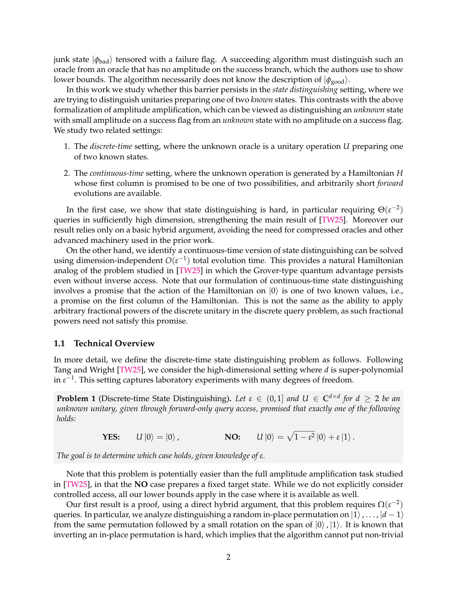
<figcaption class="paper-figure-caption"><b>Fig 1.</b> Low-resolution page preview, page 2</figcaption>
</figure>
<figure class="paper-figure-card">
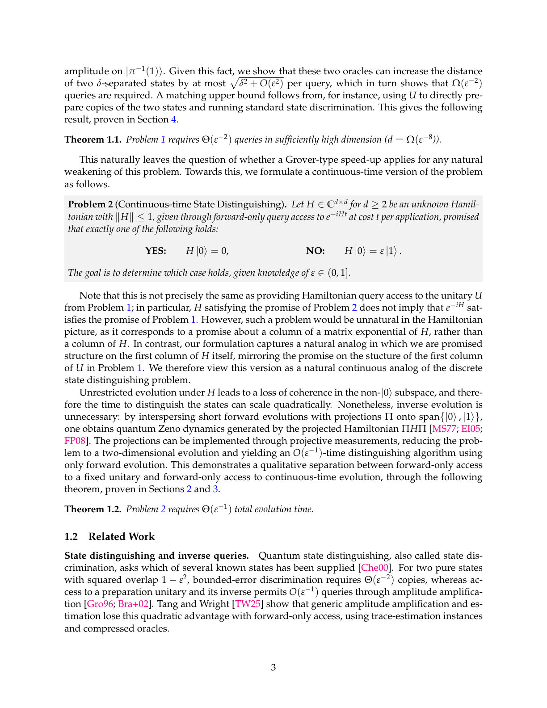
<figcaption class="paper-figure-caption"><b>Fig 2.</b> Low-resolution page preview, page 3</figcaption>
</figure>
<figure class="paper-figure-card">
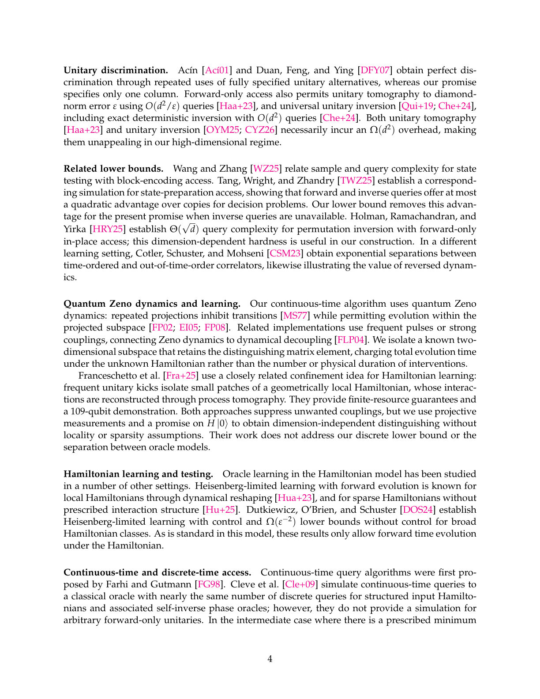
<figcaption class="paper-figure-caption"><b>Fig 3.</b> Low-resolution page preview, page 4</figcaption>
</figure>
<figure class="paper-figure-card">
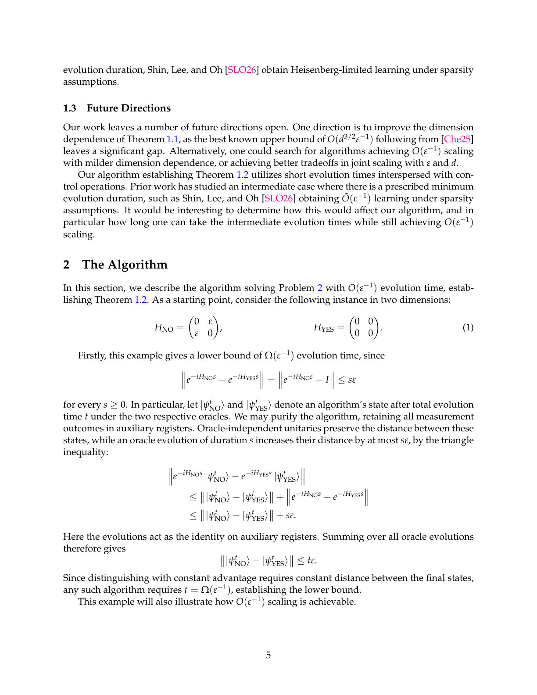
<figcaption class="paper-figure-caption"><b>Fig 4.</b> Low-resolution page preview, page 5</figcaption>
</figure>
<figure class="paper-figure-card">
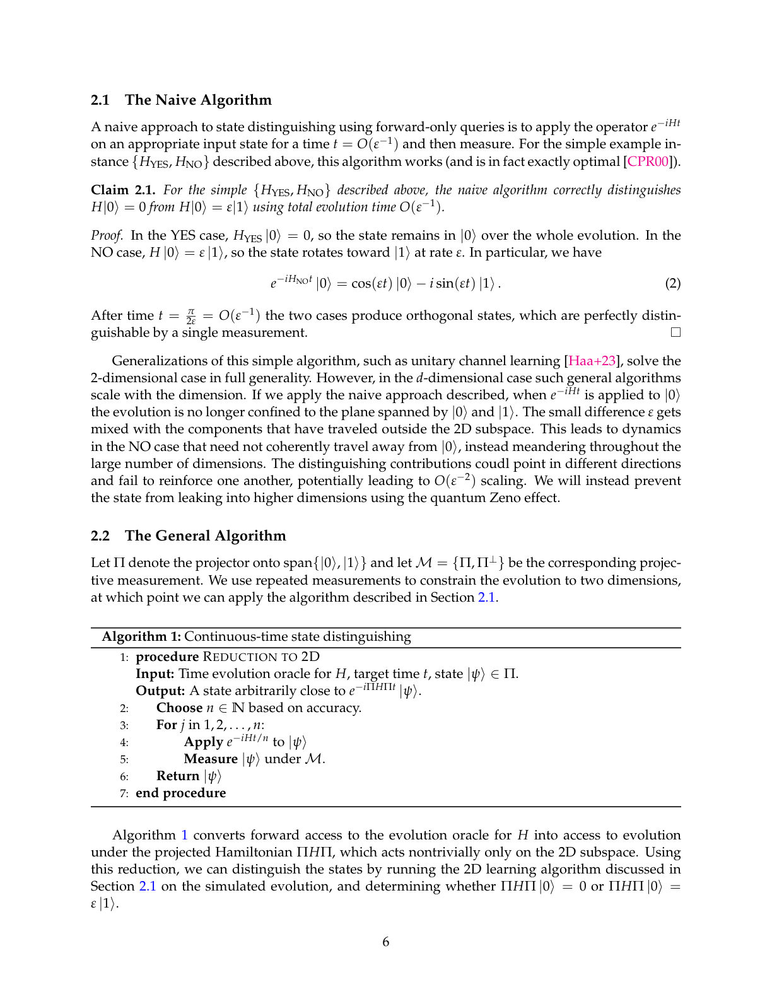
<figcaption class="paper-figure-caption"><b>Fig 5.</b> Low-resolution page preview, page 6</figcaption>
</figure>
</div>

<p><strong>Summary.</strong> This paper analyzes the quantum state distinguishing problem under the constraint of forward-only access to unitary evolution. It proves that in the discrete setting, distinguishing states requires a quadratic number of queries ($\Omega(\epsilon^{-2})$). However, by adapting the problem to a continuous-time model and employing Quantum Zeno dynamics, the authors achieve a superior scaling of $O(\epsilon^{-1})$ total evolution time.</p>
<p><strong>Why it may be interesting.</strong> The work provides concrete, quantifiable results on the limitations of quantum measurement protocols when time-reversal symmetry is broken, which is crucial for understanding physical processes like irreversible measurements or open quantum system dynamics.</p>
<details>
<summary>Detailed structure</summary>
<p><strong>Main problem.</strong> The paper investigates the minimum number of forward-only queries required to distinguish between two quantum states or unitary operations, contrasting this with scenarios where inverse queries are available.</p>
<p><strong>Main result.</strong> In the discrete-time setting, distinguishing states requires $\Theta(\epsilon^{-2})$ queries, while a continuous-time variant can be solved with a better $O(\epsilon^{-1})$ total evolution time using Quantum Zeno dynamics.</p>
<p><strong>Method.</strong> The authors employ direct hybrid arguments for lower bounds in the discrete case and utilize Quantum Zeno dynamics combined with projections to construct an efficient upper bound for the continuous-time analogue.</p>
<p><strong>Model / system.</strong> The model involves distinguishing between two states generated by unknown unitaries ($U$ vs $V$) or Hamiltonians ($H$), operating in high-dimensional Hilbert spaces. The core constraint is the inability to perform inverse queries.</p>
<p><strong>Key observables.</strong> The separation parameter $\epsilon$, the required number of queries (discrete), and the total evolution time (continuous).</p>
<p><strong>Important parameters / regimes.</strong> The dimension $d$ of the system, and the separation $\epsilon \in (0, 1]$.</p>
<p><strong>Assumptions / limitations.</strong> The primary assumption is the forward-only access to the unitary evolution or Hamiltonian, which models physical processes that cannot be reversed.</p>
<p><strong>Paper structure.</strong> The paper first establishes the lower bound for the discrete-time setting using a direct hybrid argument. It then presents an upper bound for the continuous-time setting using Quantum Zeno dynamics to reduce the problem to a 2D subspace, achieving a better scaling.</p>
</details>
<details>
<summary>Abstract</summary>
<p>In the quantum state distinguishing problem, an algorithm is given copies of a state $|ψ\rangle$ or $|φ\rangle$ separated by trace distance $\varepsilon$, and tasked with deciding which is the case. It is a standard result that $Θ(\varepsilon^{-2})$ copies are required, while having access to a unitary state preparation oracle and its inverse improves this to $Θ(\varepsilon^{-1})$ queries. We study the intermediate case with forward-only access, capturing scenarios where the oracle is a physical process that cannot be reversed. Tang and Wright recently showed that distinguishing a known state from an \emph{unknown} close state requires $Ω(\varepsilon^{-2})$ forward queries in high dimension; we strengthen this result by proving the same bound even when both states are known, as in the state distinguishing setting. Moreover, our lower bound uses a direct hybrid argument, avoiding advanced compressed oracle techniques used in the prior work. In contrast, we give a dimension-independent algorithm solving a continuous-time variant of state distinguishing with only $O(\varepsilon^{-1})$ total forward evolution time. The algorithm uses quantum Zeno dynamics to confine evolution to a known two-dimensional subspace. Thus, a quadratic advantage survives without inverse access for a natural continuous-time analogue of state distinguishing.</p>
</details>
<p><sub><a href="#top">↑ back to top</a></sub></p>

<p><a id="paper-2610.06808"></a></p>
<h3 id="quantum-1-pca-with-pauli-measurements-in-nearly-linear-time"><a href="http://arxiv.org/abs/2610.06808v1">Quantum 1-PCA with Pauli Measurements in Nearly Linear Time</a></h3>
<p><strong>Authors:</strong> Dutch Hansen, Jerry Li<br>
<strong>Type:</strong> theory · <strong>Category:</strong> quantum information and computing · <strong>PDF:</strong> <a href="https://arxiv.org/pdf/2610.06808v1">https://arxiv.org/pdf/2610.06808v1</a><br>
<strong>Analysis basis:</strong> full PDF text, analyzed in chunks
<strong>Topic relevance:</strong> 🔥 <code>quantum measurements</code> <strong>4/5</strong></p>
<div class="figure-strip-hint">↔ Scroll figures horizontally</div>
<div class="paper-figures-scroll">
<figure class="paper-figure-card">
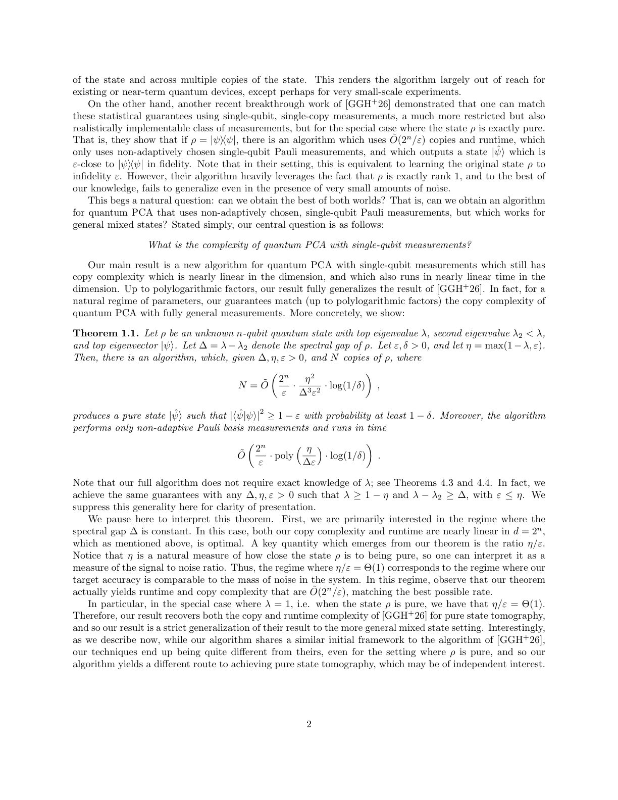
<figcaption class="paper-figure-caption"><b>Fig 1.</b> Low-resolution page preview, page 2</figcaption>
</figure>
<figure class="paper-figure-card">
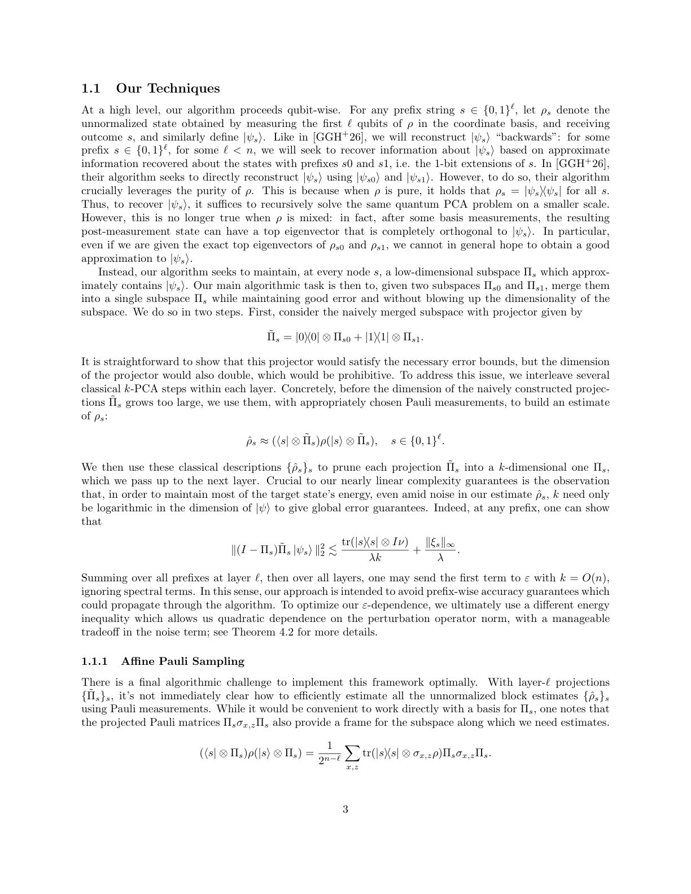
<figcaption class="paper-figure-caption"><b>Fig 2.</b> Low-resolution page preview, page 3</figcaption>
</figure>
<figure class="paper-figure-card">
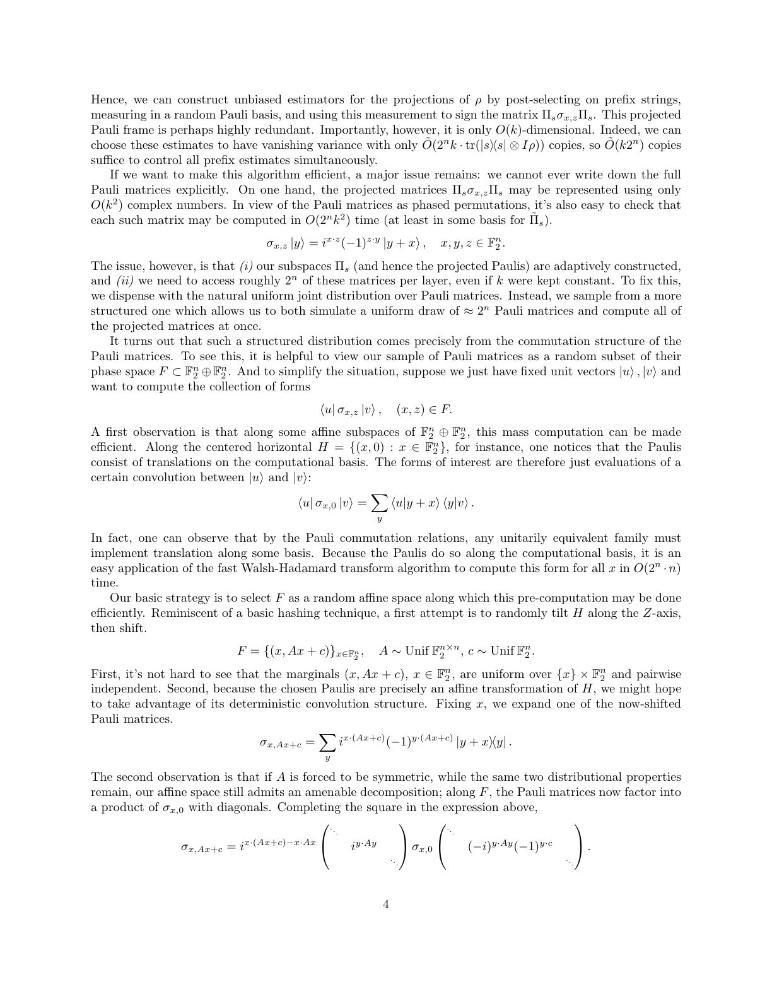
<figcaption class="paper-figure-caption"><b>Fig 3.</b> Low-resolution page preview, page 4</figcaption>
</figure>
<figure class="paper-figure-card">
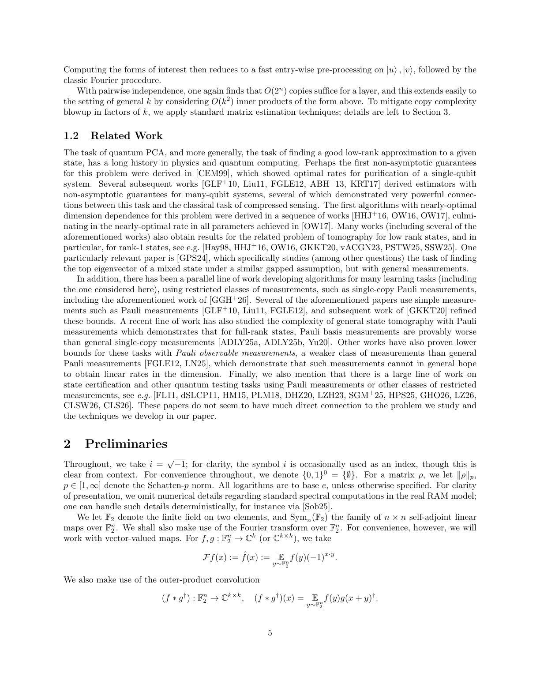
<figcaption class="paper-figure-caption"><b>Fig 4.</b> Low-resolution page preview, page 5</figcaption>
</figure>
<figure class="paper-figure-card">
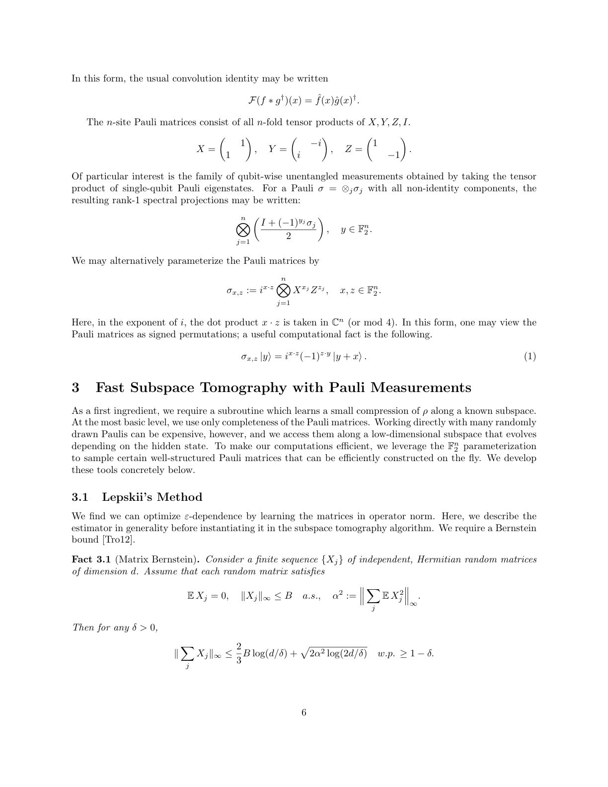
<figcaption class="paper-figure-caption"><b>Fig 5.</b> Low-resolution page preview, page 6</figcaption>
</figure>
</div>

<p><strong>Summary.</strong> This work presents an efficient quantum algorithm for performing Principal Component Analysis on unknown $n$-qubit mixed states using only single-qubit Pauli measurements. By developing a structured Pauli sampling scheme and a recursive subspace projection method, the authors achieve near-optimal complexity bounds. This is significant for quantum characterization protocols where measurement resources are limited.</p>
<p><strong>Why it may be interesting.</strong> The development of efficient, measurement-based algorithms for state characterization, particularly achieving near-exponential speedups in complexity, is crucial for practical quantum characterization protocols.</p>
<details>
<summary>Detailed structure</summary>
<p><strong>Main problem.</strong> The paper addresses the quantum Principal Component Analysis (PCA) problem: recovering a classical description of the leading eigenvector of an unknown $n$-qubit mixed state $
ho$ using only non-adaptive, single-qubit Pauli measurements.</p>
<p><strong>Main result.</strong> They provide an algorithm achieving near-optimal complexity, $ ilde{O}(2^n/\epsilon)$, for both copy count and runtime when the spectral gap is constant and accuracy matches noise levels. This generalizes prior work by handling mixed states.</p>
<p><strong>Method.</strong> The technique involves recursively constructing low-dimensional subspaces that approximate the target eigenvector, coupled with a novel structured Pauli sampling scheme for fast, batched computation of projected Pauli matrices.</p>
<p><strong>Model / system.</strong> The system is an unknown $n$-qubit mixed state $
ho$. The analysis is rooted in quantum information theory, utilizing Pauli measurements to characterize the state's leading eigenvector.</p>
<p><strong>Key observables.</strong> The leading eigenvector $|\psi
angle$, the spectral gap $\Delta = \lambda - \lambda_2$, and the fidelity $|\langle\hat{\psi}|\psi
angle|^2$.</p>
<p><strong>Important parameters / regimes.</strong> The qubit number $n$, the target error $\epsilon$, and the noise parameter $\eta = \max(1 - \lambda, \epsilon)$.</p>
<p><strong>Assumptions / limitations.</strong> The analysis relies on bounding error propagation across recursive subspace projections and assumes the existence of a structured Pauli sampling scheme for efficiency.</p>
<p><strong>Figures summary.</strong> Not specified.</p>
<p><strong>Paper structure.</strong> The paper details the overall algorithm (Algorithm 4) which iteratively prunes the state space. It builds upon techniques for estimating projected Pauli matrices using structured sampling and robust estimation methods like Lepskii's method.</p>
</details>
<details>
<summary>Abstract</summary>
<p>We consider the problem of quantum 1-PCA: given copies of an unknown $n$-qubit mixed state, recover a classical description of its leading eigenvector. Our goal is to do so using non-adaptive and single-qubit measurements. For an $n$-qubit state with top eigenvalue $λ$ and spectral gap at least $Δ> 0$, we give an algorithm that recovers the leading eigenvector to fidelity at least $1 - \varepsilon$ with high probability using $\tilde{O}\left( {2^n \cdot η^2} / {Δ^3 \varepsilon^3}\right)$ copies and $\tilde{O}((2^n/Δ\varepsilon) \cdot \operatorname{poly}(η/Δ\varepsilon))$ time, where $η= \max (1 - λ, \varepsilon)$. All of our measurements are non-adaptively chosen, and performed in single-qubit Pauli bases. When the spectral gap is constant and the desired accuracy is comparable to the noise level, i.e. $\varepsilon = Ω(η)$, our runtime and copy complexity become $\tilde{O} (2^n / \varepsilon)$. This generalizes the guarantees of Grewal et al. [arXiv:2601.04444], who achieved similar rates, but under the assumption $η= 0$, i.e., that the state was pure. Our results show that the same rates hold in the presence of state misspecification, up to polylogarithmic factors. From a technical perspective, our algorithm works by recursively constructing low-dimensional subspaces that approximately preserve the target eigenvector. To achieve nearly linear runtime dependence on the dimension of the Hilbert space, we develop a novel structured Pauli sampling scheme that enables fast batched computation of exponentially many projected Pauli matrices.</p>
</details>
<p><sub><a href="#top">↑ back to top</a></sub></p>

<p><a id="paper-2610.04788"></a></p>
<h3 id="record-consistency-under-repeated-readout-and-apparatus-composition"><a href="http://arxiv.org/abs/2610.04788v1">Record consistency under repeated readout and apparatus composition</a></h3>
<p><strong>Authors:</strong> D. M. Theshan N. Weerasinghe<br>
<strong>Type:</strong> theory · <strong>Category:</strong> other · <strong>PDF:</strong> <a href="https://arxiv.org/pdf/2610.04788v1">https://arxiv.org/pdf/2610.04788v1</a><br>
<strong>Analysis basis:</strong> full PDF text, analyzed in chunks
<strong>Topic relevance:</strong> 🔥 <code>quantum measurements</code> <strong>4/5</strong></p>
<div class="figure-strip-hint">↔ Scroll figures horizontally</div>
<div class="paper-figures-scroll">
<figure class="paper-figure-card">
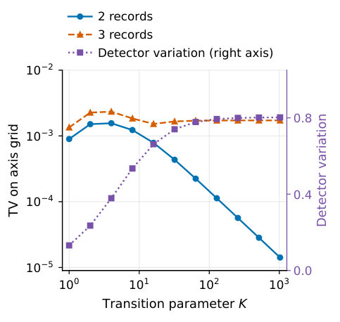
<figcaption class="paper-figure-caption"><b>Fig 1.</b> Figure 1: Finite-error behavior of the smooth response in Eq. (30), with equal widths g = 0.2 and c0 = 0.04. Two-record leakage (blue solid line, circles) decreases as K grows, whereas three-record leakage (orange dashed line, triangles) persists for this family. Both are maximum total-variation distances on the 96-axis grid, read against the left axis. Detector variation max fK−min fK (purple dotted line, squares; right axis) remains finite and is evaluated on the 65,536-angle grid. These grid extrema are numerical quantities, distinct from the continuum statements proved in the text.</figcaption>
</figure>
<figure class="paper-figure-card">
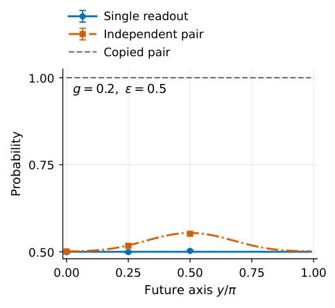
<figcaption class="paper-figure-caption"><b>Fig 2.</b> Figure 2: Repeated passive readout for the sinusoidal detector in Eq. (33), at g = 0.2 and ϵ = 0.5. The single- readout success probability (blue solid line) is independent of the future axis, whereas the agreement probability of two fresh readouts (orange dash-dotted line) varies. Copies of the first bit agree with certainty (gray dashed line). Lines give model probabilities. Blue circles and orange squares represent the respective 100,000-history Monte Carlo estimates; error bars are pointwise 95% Wilson intervals.</figcaption>
</figure>
<figure class="paper-figure-card">
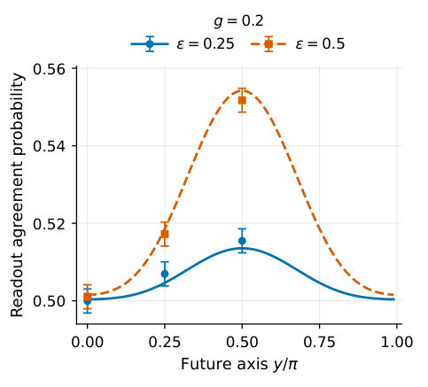
<figcaption class="paper-figure-caption"><b>Fig 3.</b> Figure 4: Agreement of two independent passive read- outs at g = 0.2 for the sinusoidal response in Eq. (33). Blue solid lines and circles correspond to ϵ = 0.25; or- ange dashed lines and squares correspond to ϵ = 0.5. Curves use deterministic integration; markers use 100,000 continuous source histories per context. Error bars are pointwise 95% Wilson intervals and describe Monte Carlo sampling uncertainty within the specified model. Simul- taneous exact intervals for the 90 event probabilities are included in the numerical data.</figcaption>
</figure>
<figure class="paper-figure-card">
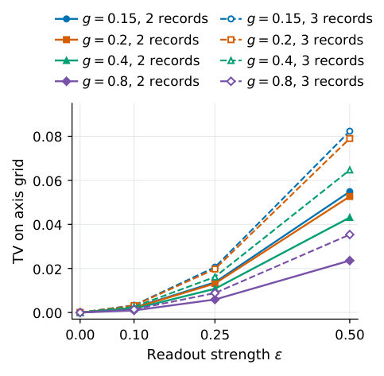
<figcaption class="paper-figure-caption"><b>Fig 4.</b> Figure 3: Dependence of repeated-readout leakage on the common source width g and detector strength ϵ for Eq. (33). The maximum pairwise total-variation distance over 96 future axes is shown for two (solid lines, filled markers) and three (dashed lines, open markers) fresh readouts. Widths g = 0.15, 0.2, 0.4, 0.8 are represented by blue circles, orange squares, green triangles, and purple diamonds, respectively. Grid maxima are lower bounds on the corresponding continuum suprema.</figcaption>
</figure>
<figure class="paper-figure-card">
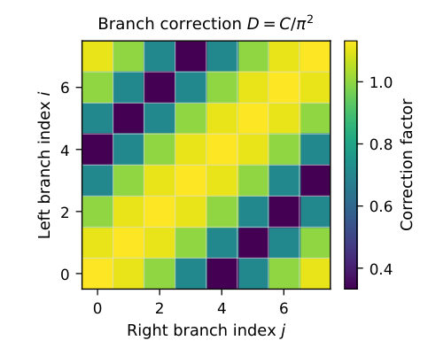
<figcaption class="paper-figure-caption"><b>Fig 5.</b> Figure 5: Dimensionless network correction D = C/π2</figcaption>
</figure>
</div>

<p><strong>Summary.</strong> This theoretical paper analyzes the robustness of no-signalling constraints when an experimental apparatus is extended through repeated measurements or network connections. Using advanced mathematical tools, the authors establish necessary conditions—beyond simple marginal constraints—that must hold for the joint record law to remain consistent. The findings provide a detailed framework for understanding the limitations of local realism in complex measurement settings.</p>
<p><strong>Why it may be interesting.</strong> This work provides rigorous mathematical constraints on how local no-signalling principles must be extended to describe complex, multi-stage quantum or retrocausal measurements, which has implications for understanding measurement theory beyond simple Bell tests.</p>
<details>
<summary>Detailed structure</summary>
<p><strong>Main problem.</strong> The paper investigates the necessary conditions for an apparatus to maintain the joint law of its accessible records when subjected to complex extensions like repeated readout, network composition, or reuse, even if initial isolated outcome probabilities satisfy no-signalling constraints.</p>
<p><strong>Main result.</strong> The study derives specific, non-trivial conditions—such as angle-independent responses for two readouts or full non-negative rank for correction matrices—that must accompany marginal no-signalling when extending an apparatus to richer records.</p>
<p><strong>Method.</strong> The authors employ a conditional-record criterion, utilizing tools from Fourier analysis, total variation distance bounds, and developing four explicit mathematical models to test these extensions.</p>
<p><strong>Model / system.</strong> The analysis focuses on retrocausal models, specifically using a wrapped-Cauchy retrocausal source and developing criteria for apparatus extension across different measurement scenarios (e.g., Bell junctions, continuous readouts).</p>
<p><strong>Key observables.</strong> Joint record distribution, total variation distance ($L_2$), detector response function ($f$), and the rank of required correction matrices.</p>
<p><strong>Important parameters / regimes.</strong> Angular bandwidth ($\gamma$), the number of readouts (two vs. three), and the resource constraints of the controller.</p>
<p><strong>Assumptions / limitations.</strong> The analysis relies on defining accessible records, assuming fixed preparation/interventions, and distinguishing between passive readouts and active interventions.</p>
<p><strong>Figures summary.</strong> Figures illustrate the finite-error behavior of smooth responses for two and three readouts, and compare single-readout probabilities versus joint probabilities for different detector types.</p>
<p><strong>Paper structure.</strong> The paper proceeds by defining the source/apparatus specification, then detailing the conditional-record criterion, and finally applying this criterion to four distinct extension scenarios: repeated readout, network composition, and variable-width source laws.</p>
</details>
<details>
<summary>Abstract</summary>
<p>No-signalling constraints on isolated outcome probabilities do not determine whether an apparatus preserves the joint law of its accessible records under repeated readout, network composition, or reuse. We study these extensions through a conditional-record criterion and four explicit models. For a wrapped-Cauchy retrocausal source, protection under two conditionally independent continuous readouts forces an angle-independent response; three readouts suffice without continuity. A finite angular-bandwidth assumption gives a quantitative leakage bound, whereas continuity alone gives no uniform stability. At a specified two-source Bell junction, the required correction matrix has full nonnegative rank on every even uniform angular grid. A Gaussian controller can cancel branch-mass dependence while leaving a distinguishable joint record, for which we derive exact noise and law-change tradeoffs. Finally, a fixed singlet with shared classical noise reproduces the variable-width isolated outcome family, but retained and refreshed controllers generate different temporal statistics. We prove a finite-resource obstruction and construct positive finite-controller approximations. Numerical studies comprising 8.3 million independent simulated histories support the model-specific predictions. Together, the results identify conditions that must accompany marginal no-signalling when extending an apparatus to richer records and interventions.</p>
</details>
<p><sub><a href="#top">↑ back to top</a></sub></p>

<p><a id="paper-2610.06755"></a></p>
<h3 id="the-grothendieck-game-and-self-testing-continuous-groups"><a href="http://arxiv.org/abs/2610.06755v1">The Grothendieck Game and Self-Testing Continuous Groups</a></h3>
<p><strong>Authors:</strong> Alexander Kulpe, Giulio Malavolta, Simon Schmidt, Michael Walter<br>
<strong>Type:</strong> theory · <strong>Category:</strong> quantum information and computing · <strong>PDF:</strong> <a href="https://arxiv.org/pdf/2610.06755v1">https://arxiv.org/pdf/2610.06755v1</a><br>
<strong>Analysis basis:</strong> full PDF text, analyzed in chunks
<strong>Topic relevance:</strong> 🔥 <code>quantum measurements</code> <strong>4/5</strong></p>
<div class="figure-strip-hint">↔ Scroll figures horizontally</div>
<div class="paper-figures-scroll">
<figure class="paper-figure-card">
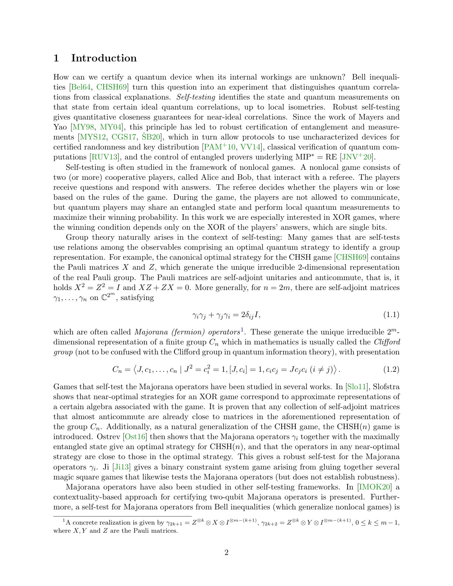
<figcaption class="paper-figure-caption"><b>Fig 1.</b> Low-resolution page preview, page 2</figcaption>
</figure>
<figure class="paper-figure-card">
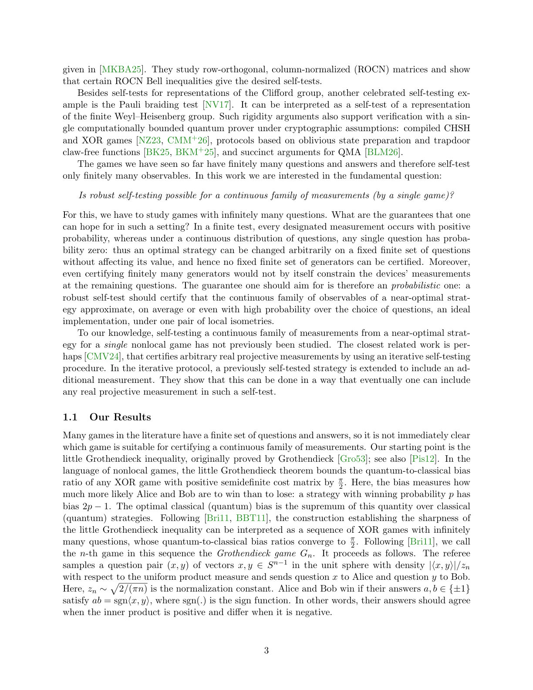
<figcaption class="paper-figure-caption"><b>Fig 2.</b> Low-resolution page preview, page 3</figcaption>
</figure>
<figure class="paper-figure-card">
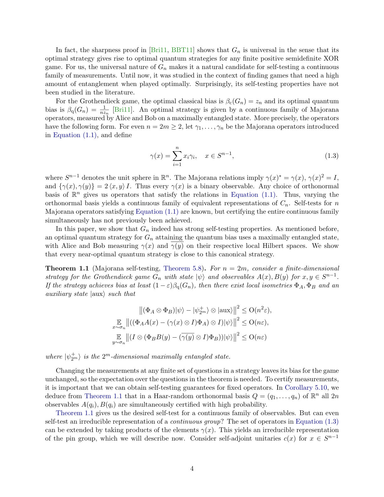
<figcaption class="paper-figure-caption"><b>Fig 3.</b> Low-resolution page preview, page 4</figcaption>
</figure>
<figure class="paper-figure-card">
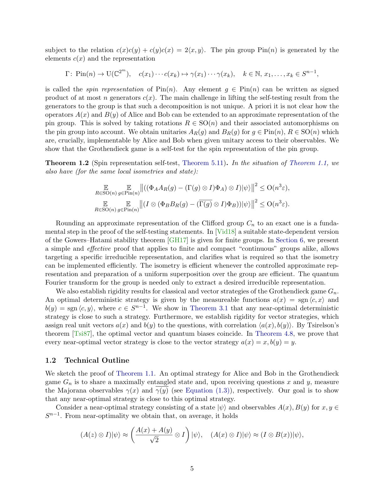
<figcaption class="paper-figure-caption"><b>Fig 4.</b> Low-resolution page preview, page 5</figcaption>
</figure>
<figure class="paper-figure-card">
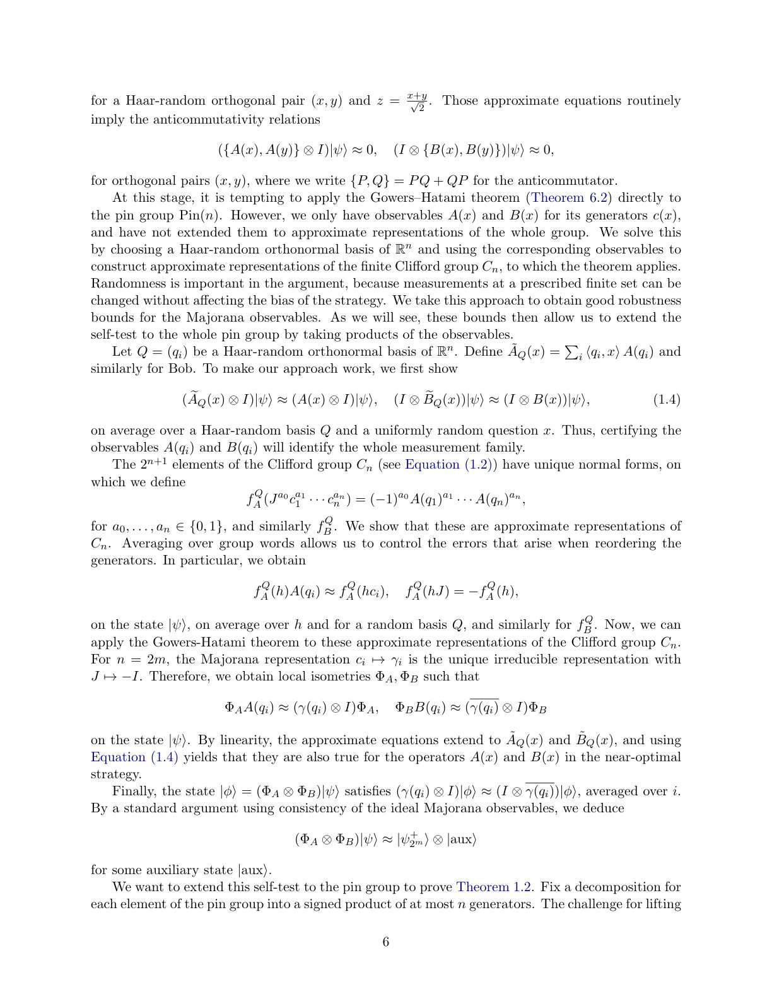
<figcaption class="paper-figure-caption"><b>Fig 5.</b> Low-resolution page preview, page 6</figcaption>
</figure>
</div>

<p><strong>Summary.</strong> This paper develops a novel method using the Grothendieck Game to perform a robust self-test on continuous families of quantum measurements generated by Majorana operators. By showing that near-optimal performance in this game implies the measurement perfectly implements the continuous family, the authors extend this certification to the spin representation of the Pin group. This advances the field of quantum process characterization from finite to continuous settings.</p>
<p><strong>Why it may be interesting.</strong> This work provides powerful tools for characterizing unknown quantum processes purely from measurement statistics, which is crucial for verifying quantum hardware or theoretical models without full device knowledge.</p>
<details>
<summary>Detailed structure</summary>
<p><strong>Main problem.</strong> The primary goal is to establish a robust self-test for continuous families of quantum measurements, specifically those generated by Majorana operators and the spin representation of the Pin group.</p>
<p><strong>Main result.</strong> The Grothendieck Game serves as a self-test for the full continuous family of Majorana measurements, and this technique is extended to provide a robust self-test for the spin representation of the continuous Pin group.</p>
<p><strong>Method.</strong> The authors utilize the Grothendieck Game, a nonlocal game, whose optimal quantum strategy is shown to constrain the underlying measurement operators to be close to the ideal continuous family generators.</p>
<p><strong>Model / system.</strong> The physical system involves Majorana operators ($\gamma_i$) generating the Clifford group, and the extension covers the spin representation of the Pin group. The analysis relies on quantum strategies for nonlocal games.</p>
<p><strong>Key observables.</strong> The quantum bias achieved in the Grothendieck Game, and the squared norms of the difference between implemented operators and the ideal group generators.</p>
<p><strong>Important parameters / regimes.</strong> The error parameter $\epsilon$ (for near-optimality), and the dimension $n$ of the underlying space.</p>
<p><strong>Assumptions / limitations.</strong> The extension to the full Pin group requires using a 'symmetrization trick' involving random rotations from SO(n) to average over the group structure.</p>
<p><strong>Figures summary.</strong> Not specified.</p>
<p><strong>Paper structure.</strong> The paper progresses from establishing the self-test for the continuous family of Majorana operators using the Grothendieck Game, then extends this result to the entire spin representation of the Pin group by averaging over random rotations, and concludes with a general theorem on isometries for compact groups.</p>
</details>
<details>
<summary>Abstract</summary>
<p>Self-testing certifies quantum states and measurements from observed correlations alone, without requiring a description of the devices that produce them. In this work we establish, to the best of our knowledge, the first robust self-test of the full continuous family of measurements generated by Majorana operators. We achieve this by showing that the Grothendieck game, a two-player nonlocal game in which the players receive directions on a sphere and return binary answers, is a self-test of Majorana observables. That is, any near-optimal performance certifies an entire continuously parameterized family of quantum measurements. We further extend this certification to products of Majorana observables, obtaining a robust self-test of the spin representation of the continuous pin group.</p>
</details>
<p><sub><a href="#top">↑ back to top</a></sub></p>

<p><a id="paper-2610.04043"></a></p>
<h3 id="modal-input-output-theory-for-quantum-nanophotonics-from-the-first-order-maxwell-operator"><a href="http://arxiv.org/abs/2610.04043v1">Modal input-output theory for quantum nanophotonics from the first-order Maxwell operator</a></h3>
<p><strong>Authors:</strong> Ankit Kundu, Ishita Agarwal, Adhyyan S. Mansukhani, Jonathan D. Hood<br>
<strong>Type:</strong> theory · <strong>Category:</strong> other · <strong>PDF:</strong> <a href="https://arxiv.org/pdf/2610.04043v1">https://arxiv.org/pdf/2610.04043v1</a><br>
<strong>Analysis basis:</strong> full PDF text, analyzed in chunks
<strong>Topic relevance:</strong> <code>Keldysh / 2PI / non-Gaussian methods</code> <strong>3/5</strong> · <code>correlated / nonlocal dissipation</code> <strong>3/5</strong> · <code>driven-dissipative phase transition</code> <strong>3/5</strong> · <code>methods for driven-dissipative</code> <strong>3/5</strong> · <code>Tavis-Cummings &amp; cavity-many-emitter</code> <strong>2/5</strong> · <code>analog quantum simulation</code> <strong>2/5</strong> · <code>non-equilibrium universality</code> <strong>2/5</strong> · <code>quantum measurements</code> <strong>2/5</strong> · <code>Full counting statistics</code> <strong>1/5</strong> · <code>interference shaping light</code> <strong>1/5</strong></p>
<div class="figure-strip-hint">↔ Scroll figures horizontally</div>
<div class="paper-figures-scroll">
<figure class="paper-figure-card">
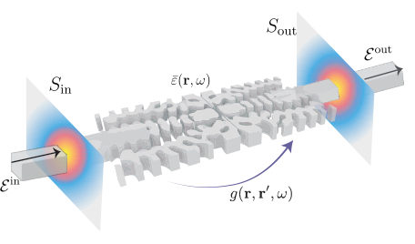
<figcaption class="paper-figure-caption"><b>Fig 1.</b> FIG. 1. Illustration of the quantum input-output system for an arbitrary lossy medium characterized by ¯ε(r, ω). Input and output fields are defined on the reference planes Sin and Sout. The input modes ˆan are propagated into the output modes ˆbm by the electromagnetic Greens function g(r, r′, ω).</figcaption>
</figure>
<figure class="paper-figure-card">
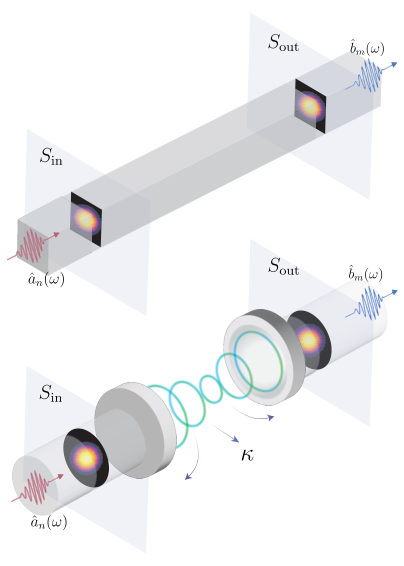
<figcaption class="paper-figure-caption"><b>Fig 2.</b> FIG. 2. The two canonical geometries considered in Sec. III. Upper: a uniform lossless waveguide. Lower: a cavity cou- pled to input and output channels, with additional radiative leakage and material absorption. In both cases, the channel fields are defined on the reference planes Sin and Sout.</figcaption>
</figure>
<figure class="paper-figure-card">
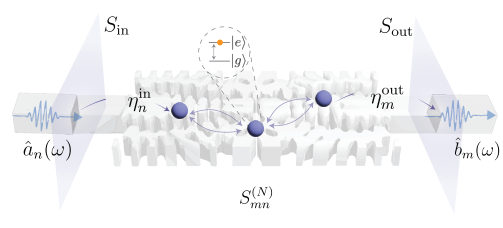
<figcaption class="paper-figure-caption"><b>Fig 3.</b> FIG. 3. Two-level emitters embedded in a structured pho- tonic environment. The input mode ˆan drives the emitters through ηin n , their collective response is described by M−1, and ηout m couples their radiation to output mode ˆbm. This emitter-mediated contribution combines with the background scattering to give S(N) mn in Eq. (38).</figcaption>
</figure>
<figure class="paper-figure-card">
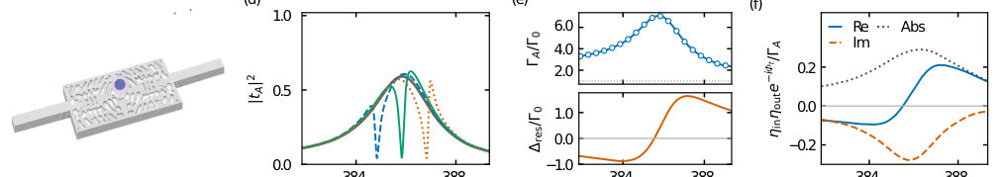
<figcaption class="paper-figure-caption"><b>Fig 4.</b> FIG. 4. Single-emitter response reconstructed from classical Green-function simulations for a fishbone cavity (top row) and a bidirectional DC structure (bottom row). First column: illustrative device schematics; the multi-emitter drawing is a layout placeholder, while all curves describe one emitter. Second column: power transmission with no emitter (gray) and for three emitter detunings δfA = fA −fc, with fixed free-space linewidth Γ0/(2π) = 32.63 GHz. The reference frequencies are fc = 379.3918 and 385.8333 THz, respectively. (b,e) Upper: total electromagnetic decay rate; circles indicate every fourth original frequency sample. Lower: resonant frequency shift obtained by fitting the...</figcaption>
</figure>
</div>

<p><strong>Summary.</strong> This paper establishes a comprehensive quantum input-output theory for open photonic systems, extending standard methods to handle arbitrary dispersive and absorbing media. It successfully incorporates the coupling of embedded emitters into the scattering description using a generalized modal framework. This provides a vital tool for designing and analyzing quantum light-matter interactions in complex nanophotonic circuits.</p>
<p><strong>Why it may be interesting.</strong> This work provides a powerful, general formalism for calculating quantum scattering properties in complex, lossy nanophotonic devices, directly linking electromagnetic response (via Green's functions) to quantum noise and coupling.</p>
<details>
<summary>Detailed structure</summary>
<p><strong>Main problem.</strong> Developing a quantum input-output theory for open photonic systems to describe field propagation, loss, and coupling to embedded emitters.</p>
<p><strong>Main result.</strong> The authors derive a generalized modal input-output relation that successfully unifies scattering, material absorption noise, and emitter coupling into a single framework.</p>
<p><strong>Method.</strong> The theory uses macroscopic quantum electrodynamics based on the first-order electromagnetic Green's function to propagate fields through arbitrary media.</p>
<p><strong>Model / system.</strong> The system involves open photonic structures (waveguides, cavities) characterized by dispersive and absorbing media, coupled to quantum emitters (e.g., two-level systems).</p>
<p><strong>Key observables.</strong> Port-to-port scattering matrix ($S_{mn}$), Langevin noise contribution ($\hat{\xi}_m$), and the total scattering matrix including emitters ($S^{(N)}_{mn}$).</p>
<p><strong>Important parameters / regimes.</strong> Low-saturation regime for emitters, frequency ($\omega$), and the material's permittivity ($ar{\epsilon}(\mathbf{r}, \omega)$).</p>
<p><strong>Assumptions / limitations.</strong> The derivation assumes the input/output reference surfaces are infinite planes and that the emitter dynamics are treated in the low-saturation (linearized) regime.</p>
<p><strong>Figures summary.</strong> Figures illustrate the quantum input-output system for lossy media, canonical geometries (waveguide vs. cavity), and the coupling of two-level emitters to the structured environment.</p>
<p><strong>Paper structure.</strong> The paper builds the theory by first establishing the general input-output relation using the Green's function, then extending it to include multiple emitters via linearized Heisenberg-Langevin equations, and finally applying it to specific geometries like coupled cavities and waveguide-emitter systems.</p>
</details>
<details>
<summary>Abstract</summary>
<p>We develop a quantum input-output theory for open photonic systems based on macroscopic quantum electrodynamics using the first-order electromagnetic Green's function. Quantum fields enter and leave the photonic system through waveguide ports, while the electromagnetic Green's function propagates the fields through the arbitrary interior of the photonic system, which may be dispersive and absorbing. The resulting relation contains a port-to-port scattering matrix and a Langevin-noise contribution from material absorption that together preserve the bosonic output commutation relations. For embedded emitters, the low-saturation and single-excitation scattering response is determined by Green's functions connecting the ports and emitters while retaining the non-Markovianity of the photonic environment. Using finite-difference time-domain simulation, we calculate the emitter-modified transmission for a nanophotonic cavity and inverse-designed coupler, providing a direct route from computed electromagnetic response to a quantum input-output model.</p>
</details>
<p><sub><a href="#top">↑ back to top</a></sub></p>

<p><a id="paper-2610.06245"></a></p>
<h3 id="probing-quantum-anomalous-hall-transport-under-microwave-irradiation-using-a-topological-circulator"><a href="http://arxiv.org/abs/2610.06245v1">Probing Quantum Anomalous Hall Transport Under Microwave Irradiation Using a Topological Circulator</a></h3>
<p><strong>Authors:</strong> Athul Ashok, Frank Jin, Nick Du, Luis A. Martinez, Jenny Zhou, Sean O'Kelley, Zachary J. -R. Espley, Gang Qiu, Kang L. Wang, Dong-Xia Qu<br>
<strong>Type:</strong> experiment · <strong>Category:</strong> other · <strong>PDF:</strong> <a href="https://arxiv.org/pdf/2610.06245v1">https://arxiv.org/pdf/2610.06245v1</a><br>
<strong>Analysis basis:</strong> full PDF text, analyzed in chunks
<strong>Topic relevance:</strong> <code>analog quantum simulation</code> <strong>3/5</strong> · <code>correlated / nonlocal dissipation</code> <strong>3/5</strong> · <code>driven-dissipative phase transition</code> <strong>3/5</strong> · <code>methods for driven-dissipative</code> <strong>3/5</strong> · <code>Keldysh / 2PI / non-Gaussian methods</code> <strong>2/5</strong> · <code>non-equilibrium universality</code> <strong>2/5</strong> · <code>quantum measurements</code> <strong>2/5</strong> · <code>Tavis-Cummings &amp; cavity-many-emitter</code> <strong>1/5</strong> · <code>interference shaping light</code> <strong>1/5</strong> · <code>quantum optics experiment</code> <strong>1/5</strong></p>
<div class="figure-strip-hint">↔ Scroll figures horizontally</div>
<div class="paper-figures-scroll">
<figure class="paper-figure-card">
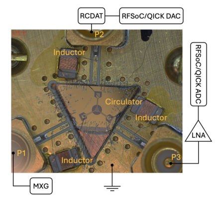
<figcaption class="paper-figure-caption"><b>Fig 1.</b> FIG. 1. Pump–probe measurement configuration for the topolog- ical circulator. A continuous-wave pump generated by the vector signal generator (Keysight N5182B MXG) is applied to Port 1 (P1). The Zynq UltraScale+ RFSoC board with the Quantum Instrumenta- tion Control Kit (QICK) digital-to-analog converter (DAC) supplies the probe signal to Port 2 (P2) through a programmable attenuator (RCDAT), which sets the probe power incident on the device. The resulting transmission is collected at Port 3 (P3), amplified by a low- noise amplifier (LNA), and digitized by the RFSoC/QICK analog-to- digital converter (ADC).</figcaption>
</figure>
<figure class="paper-figure-card">
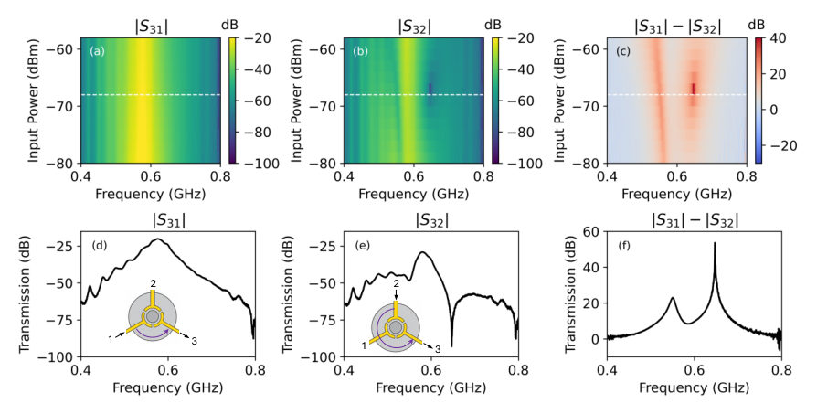
<figcaption class="paper-figure-caption"><b>Fig 2.</b> FIG. 2. Transmission response of the circulator as a function of input power. (a)–(c) Power-dependent microwave transmission responses |S31|, |S32|, and |S32|−|S31| for the 100µm-radius circulator coupled to LC resonators. The signal is excited from ports 1 and 2, and measured at port 3. (d)–(f) Frequency line cuts from panels (a), (b), and (c) at an input power of P = −68 dBm. The insets in (d) and (e) show schematic device structures illustrating anticlockwise EMP transport from Port 1 to Port 3 and from Port 2 to Port 3, respectively.</figcaption>
</figure>
<figure class="paper-figure-card">
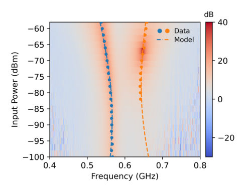
<figcaption class="paper-figure-caption"><b>Fig 3.</b> FIG. 3. Power-dependent hybridization of the LC and EMP modes. Color map of the nonreciprocal transmission contrast, |S31| −|S32|, as a function of frequency and input power. The ex- tracted lower- and upper-frequency resonance branches are indicated by blue and orange circles, respectively, while the dashed curves show a fit to the two-mode coupled-resonator model.</figcaption>
</figure>
<figure class="paper-figure-card">
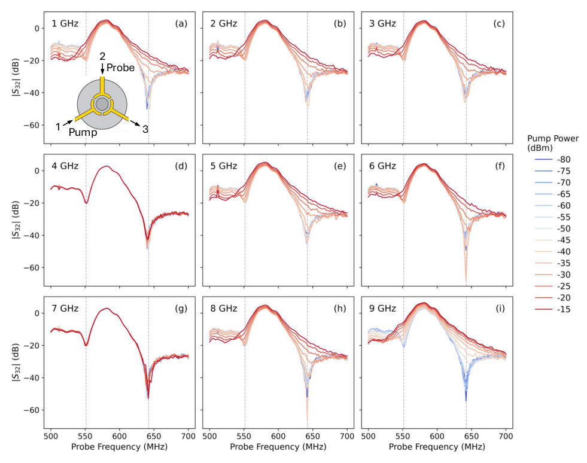
<figcaption class="paper-figure-caption"><b>Fig 4.</b> FIG. 4. Microwave transmission spectra between 500 and 700 MHz under various pump powers. A continuous-wave pump signal from the MXG is injected through Port 1, with the pump frequency varied from 1 to 9 GHz over a range of power levels. The transmission spectra are measured using the RFSoC/QICK setup by applying a 2.2 µs-long excitation pulse to Port 2 and measuring the transmitted signal at Port 3, as shown in the inset of (a). The two dashed lines mark the frequencies at 551.5 and 642.3 MHz.</figcaption>
</figure>
<figure class="paper-figure-card">
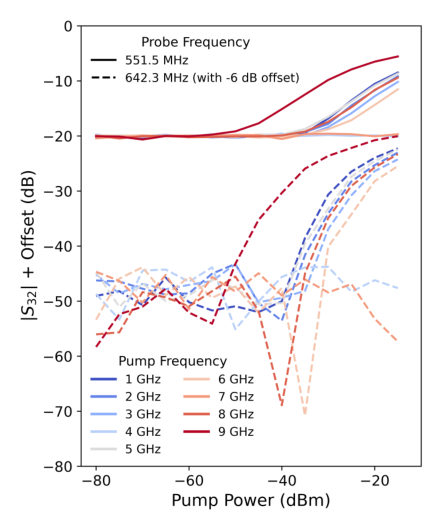
<figcaption class="paper-figure-caption"><b>Fig 5.</b> FIG. 5. Pump-power dependence of the transmission response at two probe frequencies. Transmission magnitude |S32| as a function of pump power for pump frequencies from 1 to 9 GHz, measured at probe frequencies of 551.5 MHz (solid lines) and 642.3 MHz (dashed lines). The 642.3 MHz traces are vertically offset by −6 dB for clar- ity. The response at 642.3 MHz, near the exceptional point, exhibits a substantially stronger pump-power dependence for several pump frequencies than the response at 551.5 MHz, away from the excep- tional point, while selected pump frequencies show comparatively weak perturbation.</figcaption>
</figure>
</div>

<p><strong>Summary.</strong> This work demonstrates the use of a topological circulator to probe chiral edge magnetoplasmon transport using microwave-photon interactions. By analyzing the system near an exceptional point, the researchers achieved a quantitative enhancement of the microwave response to perturbations. This confirms the potential of such topological structures for highly sensitive microwave spectroscopy.</p>
<p><strong>Why it may be interesting.</strong> The explicit use of non-Hermitian physics, exceptional points, and microwave-induced perturbations provides a rich platform for studying open quantum systems dynamics, which is highly relevant to AMO and quantum optics.</p>
<details>
<summary>Detailed structure</summary>
<p><strong>Main problem.</strong> The study investigates how microwave irradiation perturbs the transport of chiral edge magnetoplasmons (EMPs) in topological quantum materials.</p>
<p><strong>Main result.</strong> The system exhibits a strongly enhanced microwave response near an exceptional point (EP), where the pump-induced change in transmission magnitude is approximately twice that observed away from the EP.</p>
<p><strong>Method.</strong> The research uses pump-probe microwave measurements on a topological circulator coupled to LC resonators, analyzing the resulting non-Hermitian mode hybridization.</p>
<p><strong>Model / system.</strong> The physical system is a Quantum Anomalous Hall (QAH) topological circulator coupled to LC resonators, modeled by an effective non-Hermitian Hamiltonian describing coupled EMP-resonator dynamics.</p>
<p><strong>Key observables.</strong> Nonreciprocal microwave transmission contrast, power-dependent hybridization splitting, and the change in transmission magnitude ($\vert S_{32} \vert$) as a function of pump power.</p>
<p><strong>Important parameters / regimes.</strong> Coupling strength ($g_f \approx 39.66$ MHz), operating frequencies (e.g., 642.3 MHz near EP), and the dependence on pump power.</p>
<p><strong>Assumptions / limitations.</strong> The analysis relies on modeling the system using an effective non-Hermitian coupled-mode model and approximating frequency variations linearly with input power.</p>
<p><strong>Figures summary.</strong> Figures illustrate the pump-probe measurement setup, power-dependent microwave transmission responses showing frequency selectivity, and the hybridization spectrum mapping the nonreciprocal contrast.</p>
<p><strong>Paper structure.</strong> The paper progresses from defining the physical platform and the challenge of measurement sensitivity, to developing the coupled-mode Hamiltonian, presenting the pump-probe measurements, and finally quantifying the enhanced response near the EP.</p>
</details>
<details>
<summary>Abstract</summary>
<p>Edge magnetoplasmons (EMPs) provide a platform for probing chiral charge dynamics and nonreciprocal microwave transport in topological quantum materials. However, detecting small perturbations to EMP propagation remains challenging because their signatures in conventional microwave scattering measurements can be weak. Here, we investigate microwave-photon-induced perturbations of EMP transport using a quantum anomalous Hall topological circulator. Pump--probe measurements reveal a strongly frequency-selective response: while microwave irradiation substantially modifies the EMP transmission at several pump frequencies, the transmission remains nearly unchanged at selected frequencies, including 4 and 7 GHz. We further exploit the non-Hermitian mode hybridization of the coupled EMP-resonator system to probe the response near an exceptional point (EP). The pump-induced change in transmission magnitude near the EP is approximately twice that observed away from the EP, demonstrating an enhanced microwave response to perturbations. These results reveal the interplay among chiral EMP transport, microwave-photon-induced perturbations, and non-Hermitian dynamics, and demonstrate the potential of topological circulators as a promising platform for enhanced microwave spectroscopy and sensing.</p>
</details>
<p><sub><a href="#top">↑ back to top</a></sub></p>

<p><a id="paper-2610.04562"></a></p>
<h3 id="geometry-controlled-squeezed-waveguide-enabled-quantum-batteries"><a href="http://arxiv.org/abs/2610.04562v1">Geometry-Controlled Squeezed-Waveguide Enabled Quantum Batteries</a></h3>
<p><strong>Authors:</strong> Luis D. Zambrano-Palma, Yusef Maleki, M. Suhail Zubairy<br>
<strong>Type:</strong> theory · <strong>Category:</strong> other · <strong>PDF:</strong> <a href="https://arxiv.org/pdf/2610.04562v1">https://arxiv.org/pdf/2610.04562v1</a><br>
<strong>Analysis basis:</strong> full PDF text, analyzed in chunks
<strong>Topic relevance:</strong> <code>Tavis-Cummings &amp; cavity-many-emitter</code> <strong>3/5</strong> · <code>correlated / nonlocal dissipation</code> <strong>3/5</strong> · <code>driven-dissipative phase transition</code> <strong>3/5</strong> · <code>analog quantum simulation</code> <strong>2/5</strong> · <code>methods for driven-dissipative</code> <strong>2/5</strong> · <code>non-equilibrium universality</code> <strong>2/5</strong> · <code>Keldysh / 2PI / non-Gaussian methods</code> <strong>1/5</strong> · <code>interference shaping light</code> <strong>1/5</strong> · <code>quantum measurements</code> <strong>1/5</strong> · <code>quantum optics experiment</code> <strong>1/5</strong></p>
<div class="figure-strip-hint">↔ Scroll figures horizontally</div>
<div class="paper-figures-scroll">
<figure class="paper-figure-card">
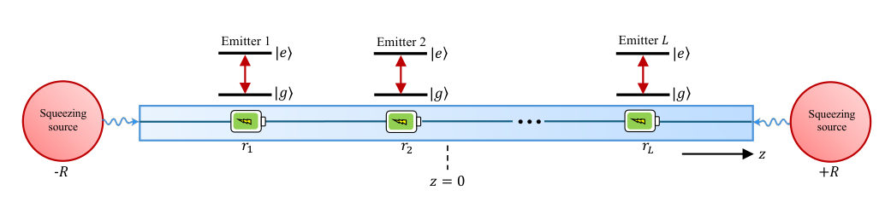
<figcaption class="paper-figure-caption"><b>Fig 1.</b> FIG. 1. Schematic of the squeezed-waveguide quantum battery. The battery is formed by L two-level emitters located at positions ri along a one-dimensional waveguide. Broadband squeezed-vacuum fields generated by squeezing sources located at ±R propagate through the waveguide and act as the charger. The coordinate origin is chosen at the midpoint between the two squeezing sources.</figcaption>
</figure>
<figure class="paper-figure-card">

<figcaption class="paper-figure-caption"><b>Fig 2.</b> FIG. 2. Comparison of the steady-state performance of the two- emitter QB coupled to squeezed-vacuum and thermal reservoirs with the same mean photon number N. (a) Steady-state stored energy, Ess sq and Ess th. (b) Steady-state ergotropy, Wss sq and Wss th. The two-emitter configuration is rc = 0 and r12 = λ0z/4.</figcaption>
</figure>
<figure class="paper-figure-card">
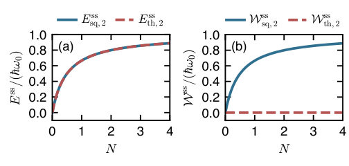
<figcaption class="paper-figure-caption"><b>Fig 3.</b> Figure 2 makes the distinction between stored energy and extractable work explicit. At fixed mean photon number N, the squeezed and thermal reservoirs produce the same</figcaption>
</figure>
<figure class="paper-figure-card">
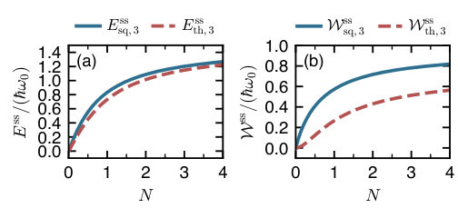
<figcaption class="paper-figure-caption"><b>Fig 4.</b> FIG. 3. Comparison of the steady-state performance of the three- emitter QB coupled to squeezed-vacuum and thermal reservoirs with the same mean photon number N. (a) Steady-state stored energy, Ess sq and Ess th. (b) Steady-state ergotropy, Wss sq and Wss th. The three-emitter configuration is r1 = −λ0z, r2 = 0, and r3 = λ0z.</figcaption>
</figure>
<figure class="paper-figure-card">
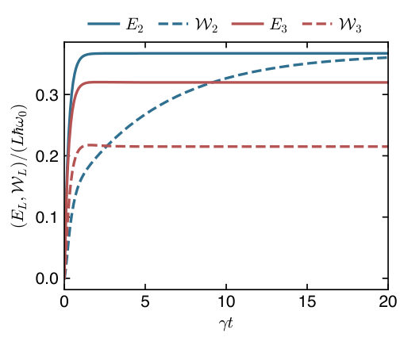
<figcaption class="paper-figure-caption"><b>Fig 5.</b> FIG. 4. Transient charging dynamics of the collective QBs for L = 2 and L = 3 emitters at squeezing parameter r = 1. The stored energy EL/(Lℏω0) (solid lines) and ergotropy WL/(Lℏω0) (dashed lines) are shown as functions of the dimensionless time γt. The two-emitter configuration is rc = 0 and r12 = λ0z/4, while for three emitters r1 = −λ0z, r2 = 0, and r3 = λ0z.</figcaption>
</figure>
</div>

<p><strong>Summary.</strong> This paper studies quantum batteries coupled to a waveguide driven by a squeezed reservoir to understand how geometry controls energy storage. The key finding is that the geometry dictates the nonclassical correlations, allowing precise control over the extractable work, which is superior to what is predicted by total stored energy alone. This highlights geometry as a powerful knob for engineering quantum work extraction.</p>
<p><strong>Why it may be interesting.</strong> This work directly addresses the interplay between engineered quantum resources (squeezing, geometry) and fundamental thermodynamic quantities (extractable work), which is central to open quantum systems and quantum thermodynamics.</p>
<details>
<summary>Detailed structure</summary>
<p><strong>Main problem.</strong> To investigate how the geometry of a waveguide controls the performance and thermodynamic features of quantum batteries (QBs) when driven by a broadband squeezed-vacuum reservoir.</p>
<p><strong>Main result.</strong> Geometry provides direct control over nonclassical correlations, allowing the extractable work (ergotropy) to be strongly modulated, and can even switch the battery between a passive and fully extractable state.</p>
<p><strong>Method.</strong> The authors derived and solved the master equation governing the system's dynamics for 1, 2, and 3 emitters, analyzing the time evolution of coherence, entanglement, and ergotropy.</p>
<p><strong>Model / system.</strong> The system consists of multiple two-level emitters coupled to a one-dimensional waveguide, which is driven by a squeezed-vacuum reservoir. The dynamics are governed by a master equation incorporating dipole-dipole interactions and phase-sensitive two-photon processes.</p>
<p><strong>Key observables.</strong> Ergotropy (extractable work), coherence ($\mathcal{C}_{ss}^{l1}$), entanglement (concurrence), stored energy ($E_L$), and nonpassivity.</p>
<p><strong>Important parameters / regimes.</strong> Emitter positions ($r_{ij}$), waveguide geometry, and the strength of squeezing.</p>
<p><strong>Assumptions / limitations.</strong> The analysis uses the electric-dipole approximation and models the reservoir as a broadband squeezed-vacuum source.</p>
<p><strong>Figures summary.</strong> Figures schematically illustrate the setup and compare steady-state stored energy versus ergotropy for the two-emitter case, and show coherence/concurrence vs. normalized emitter positions for two and three emitters.</p>
<p><strong>Paper structure.</strong> The paper develops the theoretical framework by defining the Hamiltonian and master equation, then analyzes the system sequentially for one, two, and three emitters, culminating in a detailed comparison of how geometry controls the nonclassical correlations and extractable work.</p>
</details>
<details>
<summary>Abstract</summary>
<p>Harnessed nonclassical resources to enhance the performance of quantum batteries is an important goal of quantum technology. In this work, we investigate multi-emitter batteries coupled to a one-dimensional waveguide driven by a broadband squeezed-vacuum reservoir, and determine how the waveguide geometry controls the battery performance and and their thermodynamic features. We show that for a single emitter, the squeezed reservoir deposits finite energy while the state remains passive, yielding zero ergotropy. For two emitters, however, phase-sensitive reservoir correlations generate coherence and can drive the steady state into a fully nonpassive regime. For three emitters, collective thermal dynamics already supports finite ergotropy, while squeezing further increases the extractable component of the stored energy. Crucially, because the collective and phase-sensitive couplings depend on the emitter positions, geometry provides direct control over the nonclassical correlations and, consequently, over the nonpassivity of the steady state. The ergotropy can therefore be strongly modulated while the stored energy changes only weakly, and in the two-emitter configuration geometry alone can switch the battery between a passive steady state and one in which all stored energy is unitarily extractable.</p>
</details>
<p><sub><a href="#top">↑ back to top</a></sub></p>

<p><a id="paper-2610.03965"></a></p>
<h3 id="rydberg-mediated-microwave-to-optical-transduction-with-tunable-bandwidth"><a href="http://arxiv.org/abs/2610.03965v1">Rydberg-mediated microwave-to-optical transduction with tunable bandwidth</a></h3>
<p><strong>Authors:</strong> Iason Tsiamis, David Petrosyan, Anders S. Sørensen<br>
<strong>Type:</strong> theory · <strong>Category:</strong> other · <strong>PDF:</strong> <a href="https://arxiv.org/pdf/2610.03965v1">https://arxiv.org/pdf/2610.03965v1</a><br>
<strong>Analysis basis:</strong> full PDF text, analyzed in chunks
<strong>Topic relevance:</strong> <code>Rydberg arrays</code> <strong>3/5</strong> · <code>Tavis-Cummings &amp; cavity-many-emitter</code> <strong>3/5</strong> · <code>Keldysh / 2PI / non-Gaussian methods</code> <strong>2/5</strong> · <code>analog quantum simulation</code> <strong>2/5</strong> · <code>driven-dissipative phase transition</code> <strong>2/5</strong> · <code>methods for driven-dissipative</code> <strong>2/5</strong> · <code>correlated / nonlocal dissipation</code> <strong>1/5</strong> · <code>interference shaping light</code> <strong>1/5</strong> · <code>non-equilibrium universality</code> <strong>1/5</strong> · <code>quantum measurements</code> <strong>1/5</strong></p>
<div class="figure-strip-hint">↔ Scroll figures horizontally</div>
<div class="paper-figures-scroll">
<figure class="paper-figure-card">
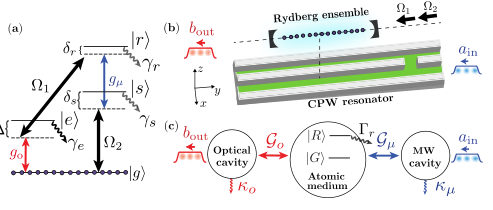
<figcaption class="paper-figure-caption"><b>Fig 1.</b> FIG. 1. (a) Atomic level structure and coupling scheme. A microwave cavity mode couples the Rydberg transition |s⟩↔|r⟩with strength gµ, while an optical cavity mode cou- ples |g⟩↔|e⟩with strength go. Two classical control fields with Rabi frequencies Ω1 and Ω2 drive the transitions |r⟩↔|e⟩ and |s⟩↔|g⟩, respectively. Detunings and decay rates are in- dicated. (b) Possible experimental realization. An ensemble of Rydberg atoms is trapped near a coplanar-waveguide mi- crowave resonator and coupled to an optical cavity mode. The collective atomic medium mediates coherent conversion be- tween microwave and optical fields. (c) Effective three-mode description. In the dispersive regime, the...</figcaption>
</figure>
<figure class="paper-figure-card">
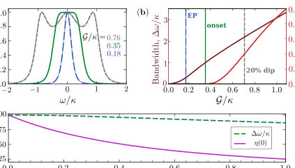
<figcaption class="paper-figure-caption"><b>Fig 2.</b> FIG. 2. Equal cavity-linewidth case, κo = κµ ≡κ. (a) Conversion efficiency as a function of frequency offset from the cavity resonances for representative effective-coupling strengths G, corresponding to the exceptional point (dash- dotted), the dip-onset point (solid), and a finite dip depth of 20% (dashed). These three values are indicated in panel (b) using the same line styles. The spectra illustrate the transi- tion from a single narrow resonance (dash-dotted) to a broad- ened plateau (solid) and a multi-peak structure (dashed) as G/κ increases. Under impedance-matched conditions with Γr = 0, the peak efficiency remains unity at ω = 0, while increasing G redistributes spectral weight...</figcaption>
</figure>
<figure class="paper-figure-card">
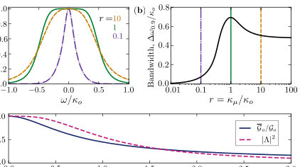
<figcaption class="paper-figure-caption"><b>Fig 3.</b> FIG. 3. Effects of cavity-linewidth asymmetry and spatially nonuniform coupling. (a) Conversion efficiency as a function of frequency offset from the cavity resonances for representa- tive cavity-linewidth ratios r = 0.1 (dash-dotted), 1 (solid), and 10 (dashed), under impedance-matched conditions with Γr = 0 at Go/κo = 1/(2 √</figcaption>
</figure>
</div>

<p><strong>Summary.</strong> This paper presents a theoretical model for a microwave-to-optical transducer using Rydberg atoms, addressing the limitation of fixed bandwidths in current devices. By tuning external driving fields, the system's conversion bandwidth can be continuously controlled from narrow to broadband while maintaining near-unit efficiency. This offers a powerful tool for building versatile quantum network components.</p>
<p><strong>Why it may be interesting.</strong> This work provides a detailed theoretical framework for engineering quantum interfaces, demonstrating how external driving fields can dynamically control the spectral properties of quantum transducers, which is highly relevant for quantum network architectures.</p>
<details>
<summary>Detailed structure</summary>
<p><strong>Main problem.</strong> Coherent microwave-to-optical transduction is crucial for quantum networks, but existing transducers suffer from fixed bandwidths and efficiency-bandwidth tradeoffs.</p>
<p><strong>Main result.</strong> The authors propose a Rydberg-mediated transducer whose conversion bandwidth can be continuously tuned in situ from narrowband to broadband without altering the physical cavity parameters.</p>
<p><strong>Method.</strong> The analysis uses the Heisenberg-Langevin equations and input-output relations to derive the conversion amplitude and efficiency, modeling the system dynamics in an effective three-mode Hamiltonian.</p>
<p><strong>Model / system.</strong> The system involves an ensemble of Rydberg atoms coupled to microwave and optical cavities. The dynamics are modeled by adiabatically eliminating intermediate states to derive an effective Hamiltonian describing coupling between a collective spin-wave mode and the two cavity modes.</p>
<p><strong>Key observables.</strong> Conversion efficiency $\eta(\omega)$, conversion bandwidth ($\Delta\omega$), and the spectral response $S_{o\mu}(\omega)$.</p>
<p><strong>Important parameters / regimes.</strong> Impedance-matching condition ($\Gamma_\mu = \Gamma_o$), driving field ratios ($\Omega_1/\Delta$, $\Omega_2/\delta_s$), and the ratio of cavity linewidths ($r = \kappa_\mu / \kappa_o$).</p>
<p><strong>Assumptions / limitations.</strong> The analysis relies on operating in the far-off-resonant regime and assuming weak excitation to allow for adiabatic elimination of certain atomic states.</p>
<p><strong>Figures summary.</strong> Figures illustrate the spectral response changing from a narrow resonance to a broadened, flat response as coupling parameters increase, and show efficiency/bandwidth dependence on linewidth ratios and coupling strengths.</p>
<p><strong>Paper structure.</strong> The paper first establishes the necessity of tunable transduction, develops the effective Hamiltonian via state elimination, derives the spectral response, and then analyzes the tunability and robustness of the high-efficiency, broadband regime.</p>
</details>
<details>
<summary>Abstract</summary>
<p>Coherent microwave-to-optical transduction is essential for hybrid quantum networks. Typical transducers, however, have bandwidths set by fixed device parameters and face efficiency-bandwidth tradeoffs. We propose a cavity-based microwave-to-optical transducer mediated by a collective Rydberg excitation, where external driving fields tune the conversion bandwidth in situ from narrowband, spectrally selective operation to broadband operation without modifying cavity parameters. Under impedance-matching conditions, the system operates as a continuous-wave phase-preserving linear transducer, maintaining both near-unit efficiency and quantum-limited added noise throughout the tunable bandwidth range.</p>
</details>
<p><sub><a href="#top">↑ back to top</a></sub></p>

<p><a id="paper-2610.05592"></a></p>
<h3 id="erasure-of-entanglement-locked-energy-in-multi-cell-quantum-batteries-through-decoherence"><a href="http://arxiv.org/abs/2610.05592v1">Erasure of entanglement-locked energy in multi-cell quantum batteries through decoherence</a></h3>
<p><strong>Authors:</strong> Haniyeh Hajizade, Vahid Ameri, Alidad Askari<br>
<strong>Type:</strong> theory · <strong>Category:</strong> other · <strong>PDF:</strong> <a href="https://arxiv.org/pdf/2610.05592v1">https://arxiv.org/pdf/2610.05592v1</a><br>
<strong>Analysis basis:</strong> full PDF text, analyzed in chunks
<strong>Topic relevance:</strong> <code>analog quantum simulation</code> <strong>3/5</strong> · <code>correlated / nonlocal dissipation</code> <strong>3/5</strong> · <code>driven-dissipative phase transition</code> <strong>3/5</strong> · <code>methods for driven-dissipative</code> <strong>3/5</strong> · <code>non-equilibrium universality</code> <strong>2/5</strong> · <code>Keldysh / 2PI / non-Gaussian methods</code> <strong>1/5</strong> · <code>Tavis-Cummings &amp; cavity-many-emitter</code> <strong>1/5</strong> · <code>quantum measurements</code> <strong>1/5</strong></p>
<div class="figure-strip-hint">↔ Scroll figures horizontally</div>
<div class="paper-figures-scroll">
<figure class="paper-figure-card">
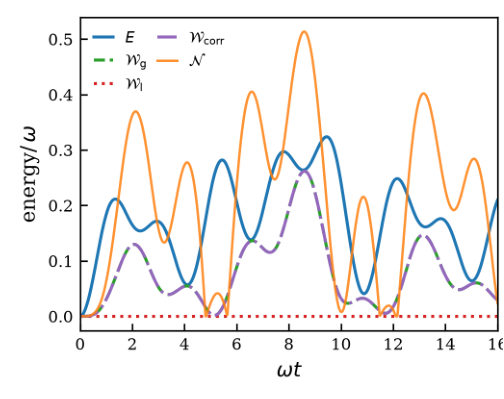
<figcaption class="paper-figure-caption"><b>Fig 1.</b> FIG. 1. Charging trajectory of two qutrit cells with a quan- tum (entangling) charger (Ω= 0.7ω, λ = 0.4ω): stored en- ergy E, global ergotropy Wg, local ergotropy Wl, correlation ergotropy Wcorr = Wg −Wl, and logarithmic negativity N. At the correlation peak Wl = 0 while Wg &gt; 0, and Wcorr tracks N.</figcaption>
</figure>
<figure class="paper-figure-card">
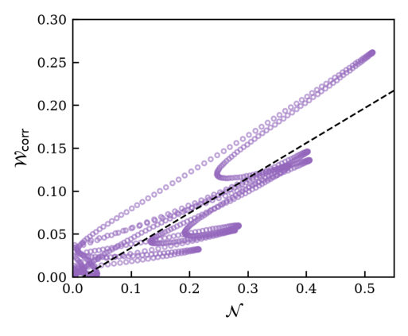
<figcaption class="paper-figure-caption"><b>Fig 2.</b> FIG. 2. Correlation ergotropy Wcorr versus logarithmic nega- tivity N along the charging trajectory of two qutrit cells. The near-linear relation (dashed line, Pearson rP = 0.89, Spear- man rS = 0.91) confirms that the locked energy is carried by genuine bipartite entanglement.</figcaption>
</figure>
<figure class="paper-figure-card">
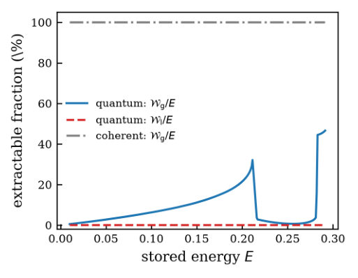
<figcaption class="paper-figure-caption"><b>Fig 3.</b> FIG. 4. Extractable fraction at matched stored energy E for the quantum (entangling) charger and the coherent (non- entangling) drive. The coherent drive extracts all of its stored energy locally (Wg = Wl = E), while the entangled charger leaves Wl = 0 and reaches at most Wg/E ≃47% over the range shown. Entanglement transforms locally accessible en- ergy into correlation ergotropy rather than increasing it.</figcaption>
</figure>
<figure class="paper-figure-card">
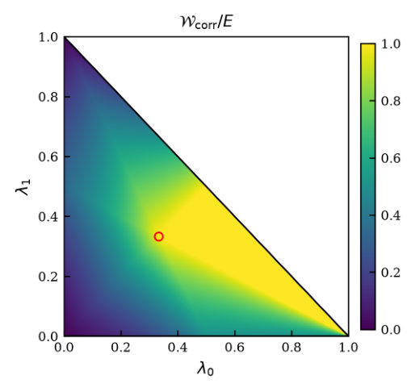
<figcaption class="paper-figure-caption"><b>Fig 4.</b> FIG. 3. Ratio Wcorr/E of a pure two-cell qutrit battery over the Schmidt simplex (λ0, λ1, λ2) [with λ2 = 1 −λ0 −λ1], from the exact result Eq. (12). The locked fraction vanishes at the separable corners and reaches unity at the symmetric maximally entangled state (|00⟩+|11⟩+|22⟩)/ √</figcaption>
</figure>
<figure class="paper-figure-card">
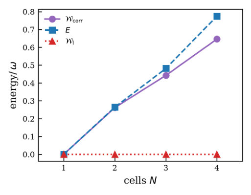
<figcaption class="paper-figure-caption"><b>Fig 5.</b> FIG. 5. Correlation ergotropy Wcorr (with the charger traced out), stored energy E, and local ergotropy Wl versus the num- ber N of qutrit cells charged by a single pumped charger (Ω= 0.7ω, λ = 0.4ω). The correlation ergotropy grows ∼N 1.3 and the stored energy ∼N 1.5, while the local er- gotropy remains zero.</figcaption>
</figure>
</div>

<p><strong>Summary.</strong> This paper quantifies the 'correlation ergotropy' in quantum batteries, demonstrating that a significant portion of stored energy is locked in genuine bipartite entanglement, inaccessible by local operations. The authors show this locked energy tracks entanglement measures and that decoherence erases this resource rather than releasing it. This provides a resource-theoretic framework for understanding collective energy extraction in quantum devices.</p>
<p><strong>Why it may be interesting.</strong> This work provides a resource-theoretic quantification of entanglement in energy storage, directly linking quantum correlation measures (like entanglement) to measurable thermodynamic quantities (extractable work) in systems relevant to AMO physics (e.g., trapped ions, Rydberg atoms).</p>
<details>
<summary>Detailed structure</summary>
<p><strong>Main problem.</strong> The study investigates the 'correlation ergotropy'—energy locked in bipartite correlations within a quantum battery that cannot be accessed by local operations.</p>
<p><strong>Main result.</strong> The locked energy is shown to track the logarithmic negativity, confirming that genuine bipartite entanglement, rather than just coherent dynamics, is the resource responsible for this energy storage.</p>
<p><strong>Method.</strong> The authors use the Lindblad master equation to model open-system dynamics and define the correlation ergotropy as the difference between global and local extractable work.</p>
<p><strong>Model / system.</strong> The system is a quantum battery composed of coupled three-level atoms (qutrits) charged by a pumped charger. The analysis compares charging dynamics under an entangling charger versus a non-entangling coherent drive.</p>
<p><strong>Key observables.</strong> Correlation Ergotropy ($W_{corr}$), Logarithmic Negativity ($N$), Global Ergotropy ($W_g$), and Local Ergotropy ($W_l$).</p>
<p><strong>Important parameters / regimes.</strong> Low temperature regime, coupling strength ($\lambda$), and the presence/absence of decoherence/dephasing.</p>
<p><strong>Assumptions / limitations.</strong> The analysis is most rigorous for pure two-cell states, and the collective advantage is confirmed in the low-temperature limit.</p>
<p><strong>Figures summary.</strong> Figures illustrate that $W_{corr}$ tracks $N$ along the charging path, that $W_l=0$ when $W_{corr}>0$, and that decoherence erases the locked energy rather than releasing it.</p>
<p><strong>Paper structure.</strong> The paper establishes the definition of correlation ergotropy, compares its behavior under entangled vs. coherent driving, derives an analytical form for pure states, and tests the robustness of the locked energy against decoherence.</p>
</details>
<details>
<summary>Abstract</summary>
<p>Charging a quantum battery through a pumped charger can lock a substantial part of its stored energy inside the bipartite correlations that grow between the constituent cells, and this \emph{correlation ergotropy}, being the energy that no local single-cell operation can reach and that only collective operations can recover, is the object of the present study. Following the charging trajectory of two coupled three-level cells, we find that the correlation ergotropy closely tracks the logarithmic negativity, which shows that the locked energy is carried by genuine bipartite entanglement rather than by coherent collective dynamics alone, and that an equal-strength coherent non-entangling drive produces no such locking at all. For a pure two-cell battery we establish an exact, basis-independent closed form in which the locked energy depends only on the sorted eigenvalues of the reduced cell and the cell energy levels, revealing that the locked fraction rises from zero at the separable corners of the Schmidt simplex to unity at the symmetric maximally entangled state and remains invariant under local unitaries. Decoherence and dephasing, which destroy the correlations, do \emph{not} release this energy but erase it, so extraction must be collective and must take place while the correlations persist, while cold damping leaves the effect intact and thermal occupation suppresses it. These results give a resource-theoretic reading of correlations in quantum batteries, sharpen the line between genuine entanglement and coherent collective dynamics, and point to experimentally accessible conditions for correlated-charge and collective-extraction protocols.</p>
</details>
<p><sub><a href="#top">↑ back to top</a></sub></p>

<p><a id="paper-2610.06000"></a></p>
<h3 id="metastability-in-quantum-dynamics-for-optimization"><a href="http://arxiv.org/abs/2610.06000v1">Metastability in Quantum Dynamics for Optimization</a></h3>
<p><strong>Authors:</strong> Yuchen Lu, Zherui Chen, Tongyang Li<br>
<strong>Type:</strong> theory · <strong>Category:</strong> statistical mechanics · <strong>PDF:</strong> <a href="https://arxiv.org/pdf/2610.06000v1">https://arxiv.org/pdf/2610.06000v1</a><br>
<strong>Analysis basis:</strong> full PDF text, analyzed in chunks
<strong>Topic relevance:</strong> <code>driven-dissipative phase transition</code> <strong>3/5</strong> · <code>methods for driven-dissipative</code> <strong>3/5</strong> · <code>scars &amp; prethermalization</code> <strong>3/5</strong> · <code>Keldysh / 2PI / non-Gaussian methods</code> <strong>2/5</strong> · <code>non-equilibrium universality</code> <strong>2/5</strong> · <code>quantum measurements</code> <strong>2/5</strong> · <code>analog quantum simulation</code> <strong>1/5</strong> · <code>correlated / nonlocal dissipation</code> <strong>1/5</strong></p>
<div class="figure-strip-hint">↔ Scroll figures horizontally</div>
<div class="paper-figures-scroll">
<figure class="paper-figure-card">

<figcaption class="paper-figure-caption"><b>Fig 1.</b> Figure 1: Two routes of dissipative control. (a) The horizontal and vertical axes show cs and cf, respectively. The blue band indicates a small residual slow contribution; its left edge cs = 0 repre- sents exact cancellation. The illustrated change in ν/µ prepares ρp on this edge. After restoring the baseline generator, the remaining contribution cfρf decays as ρ approaches the stationary target ρtar along the vertical axis. (b) Common rescaling (µ, ν) 7→c(µ, ν) changes γD at fixed ratio ν/µ. The illustrated exit from χmax &gt; χc is model-dependent; it alone does not guarantee a shorter Tε.</figcaption>
</figure>
<figure class="paper-figure-card">

<figcaption class="paper-figure-caption"><b>Fig 2.</b> Figure 2: Schematic of the piecewise quadratic double-well potential V (x) in Eq. (3.1). The minima at x = −ℓ/2 and x = ℓ/2 have energies Eδ and zero, respectively. The left and right truncation radii RL and RR are given in Eq. (3.2). The plateau energy Eb is measured from the right-well minimum, so the barrier height Eb −Eδ is measured from the left-well minimum. The drawing illustrates the geometry rather than a particular numerical parameter set.</figcaption>
</figure>
<figure class="paper-figure-card">

<figcaption class="paper-figure-caption"><b>Fig 3.</b> Figure 3: Dissipation-driven entry into and exit from the two-state spectral window χmax &gt; 19/21, at fixed Eb = 4, ℓ= 6, Eδ = 10−4 on an N = 128 Dirichlet grid on [−10, 10]. The axes show coefficient imbalance q horizontally and amplitude bs logarithmically vertically. Colors show (a) χmax from the Bloch matrix A and (b) log10(γ(2) D /ω01). The orange line is χmax = 19/21; labelled contours in (b) give strength ratios.</figcaption>
</figure>
<figure class="paper-figure-card">

<figcaption class="paper-figure-caption"><b>Fig 4.</b> Figure 4: Barrier-controlled spectral separation in the two-state model on the same N = 128 grid. The 121 × 161 points vary edb ∈[0.01, 3] and eEb ∈[1, 8] at Eδ = 10−4 and µ = ν = 1.8246 × 10−3. Colors show (a) χmax and (b) log10(Ω(2) tun/ω01); the orange contour is χmax = 19/21. Increasing the width edb or height eEb suppresses coherent transfer and leads into the above-threshold region. The projected dissipator D2 also varies across this scan.</figcaption>
</figure>
<figure class="paper-figure-card">

<figcaption class="paper-figure-caption"><b>Fig 5.</b> Figure 5: Dissipative anisotropy δD and spectral separation in two-state QLD, with Eb = 2, db = 1 and an N = 128 grid on [−9, 9]. (a) Symmetric potential Eδ = 0: independently varied δD and γ(2) D /Ω(2) tun. (b) Biased potential Eδ ∈[10−4, 0.3], at fixed γ(2) D /ω01 = 10−3; the horizontal coordinate is Ω(2) tun/ω01. Colors show χmax, and orange contours mark χmax = 19/21. Dashed curves give the exact symmetric criterion of Theorem 3.1 in (a) and the weak-dissipation criterion of Theorem 3.2 in (b).</figcaption>
</figure>
</div>

<p><strong>Summary.</strong> This paper investigates metastability in quantum optimization by analyzing how open system dynamics can cause systems to get stuck near intermediate states. The authors develop spectral criteria based on Quantum Langevin Dynamics to quantify this trapping. They show that by strategically manipulating dissipation, one can engineer the system's evolution to bypass these bottlenecks and achieve much faster convergence to the true minimum.</p>
<p><strong>Why it may be interesting.</strong> This work provides rigorous, quantitative tools (spectral criteria) for understanding and actively controlling the relaxation dynamics in complex, non-equilibrium quantum systems, which is highly relevant to open quantum systems research.</p>
<details>
<summary>Detailed structure</summary>
<p><strong>Main problem.</strong> The paper addresses metastability in quantum dynamics, where systems can get trapped in intermediate states (plateaus) before reaching their true global minimum in optimization.</p>
<p><strong>Main result.</strong> It derives spectral-separation criteria and establishes conditions under which manipulating dissipation can significantly shorten the time required to approach a target state.</p>
<p><strong>Method.</strong> The authors use spectral analysis, solving the Quantum Langevin Dynamics (QLD) equation, and deriving time-scale separation criteria based on the eigenvalues of the system's evolution operator.</p>
<p><strong>Model / system.</strong> The system is an open quantum system modeled by the Lindblad master equation, often analyzed using Quantum Langevin Dynamics (QLD) to encode an objective function $V(x)$ in the potential energy.</p>
<p><strong>Key observables.</strong> Spectral separation criterion ($\chi_{max}$), convergence time ($T_\epsilon$), and the relative decay rates of slow versus fast components.</p>
<p><strong>Important parameters / regimes.</strong> Tunneling frequency ($\Omega_{tun}$), dissipation strength ($\gamma_D$), and damping imbalance ($\delta_D$).</p>
<p><strong>Assumptions / limitations.</strong> The analysis relies on the QLD framework and assumes that the slow dynamics can be separated spectrally from the fast relaxation modes.</p>
<p><strong>Figures summary.</strong> The notes do not provide a summary of figures, but they detail the mathematical derivation and comparison of time bounds for controlled vs. baseline evolution.</p>
<p><strong>Paper structure.</strong> The paper progresses from defining the metastability problem using QLD, deriving a precise spectral-separation criterion for two-state models, extending this to multi-state systems, and finally establishing theoretical bounds and protocols for dissipative control to accelerate convergence.</p>
</details>
<details>
<summary>Abstract</summary>
<p>Metastability separates apparent equilibration from true convergence: a dynamical system can remain near an intermediate state long before reaching its stationary state. In quantum dynamics used for optimization, such a plateau can delay progress toward a target concentrated near the global minimizers of a nonconvex potential. In this paper, we initiate the study of the general mechanisms by which coherent evolution and dissipation shape metastability, using quantum Langevin dynamics (QLD) as a concrete example [CLW+25], where the objective function is encoded in the potential and coherent transfer between wells interacts with tunable dissipation. To quantify this interaction, we solve a two-state model precisely and derive a spectral-separation criterion in terms of tunneling frequency, dissipation strength, and damping imbalance. Extending the analysis to multi-state models, we show that sufficiently weak tunneling between wells can separate slow population transfer from fast relaxation within each well. In addition, we establish conditions under which changing the structure of dissipation shortens the time needed to approach a prescribed target state. Numerical experiments on double-well and multi-well potentials demonstrate these improvements while keeping the target and accuracy fixed and accounting for the time spent on control.</p>
</details>
<p><sub><a href="#top">↑ back to top</a></sub></p>

<p><a id="paper-2610.06417"></a></p>
<h3 id="lindblad-equation-for-the-quantum-rabi-model-in-the-deep-strong-coupling-regime"><a href="http://arxiv.org/abs/2610.06417v1">Lindblad equation for the quantum Rabi model in the deep strong coupling regime</a></h3>
<p><strong>Authors:</strong> Daniel Holst, Patrick Potts, Peter Samuelsson<br>
<strong>Type:</strong> theory · <strong>Category:</strong> other · <strong>PDF:</strong> <a href="https://arxiv.org/pdf/2610.06417v1">https://arxiv.org/pdf/2610.06417v1</a><br>
<strong>Analysis basis:</strong> full PDF text, analyzed in chunks
<strong>Topic relevance:</strong> <code>Tavis-Cummings &amp; cavity-many-emitter</code> <strong>3/5</strong> · <code>analog quantum simulation</code> <strong>3/5</strong> · <code>methods for driven-dissipative</code> <strong>3/5</strong> · <code>correlated / nonlocal dissipation</code> <strong>2/5</strong> · <code>driven-dissipative phase transition</code> <strong>2/5</strong> · <code>Keldysh / 2PI / non-Gaussian methods</code> <strong>1/5</strong> · <code>non-equilibrium universality</code> <strong>1/5</strong> · <code>quantum measurements</code> <strong>1/5</strong></p>
<div class="figure-strip-hint">↔ Scroll figures horizontally</div>
<div class="paper-figures-scroll">
<figure class="paper-figure-card">

<figcaption class="paper-figure-caption"><b>Fig 1.</b> Figure 1. Lowest energy eigenvalues En,πz of the quantum Rabi Hamiltonian as a function of dimensionless coupling η = g/ωc for ωq = ωc. Teal/Purple lines correspond to states with +/−parity. The shaded area shows the perturbative deep strong coupling (pDSC) regime. Inset: Schematic of the system with a qubit, frequency ωq, coupled with strength g to a single cavity mode, frequency ωc. The cavity mode is further coupled, with strength κ, to a bath kept at temperature T.</figcaption>
</figure>
<figure class="paper-figure-card">

<figcaption class="paper-figure-caption"><b>Fig 2.</b> Figure 2. a) Illustration of transitions, denoted by arrows, between the three lowest parity pairs of energy levels En,πz. Transition arrows for Bohr frequencies ω clustered around nωc are colored black (n = 0), pink (n = 1) and green (n = 2). b) Sketch of incoherent transitions (double sided arrows) be- tween system states (filled dots) due to coupling to the ther- mal bath. Transitions at η →∞(thick, solid lines) change πz and move up or down one rung on the parity energy ladders, resulting in dynamics along two uncoupled state chains with conserved total parity Λ = + (brown) and −(blue). Finite η leads to additional transitions (thin, dashed lines) between and within the two state chains...</figcaption>
</figure>
<figure class="paper-figure-card">

<figcaption class="paper-figure-caption"><b>Fig 3.</b> Figure 3. Benchmarking observables. In the main panels, the time evolution of a) occupancy ⟨ˆc†ˆc⟩(t), b) parity ⟨ˆπz⟩(t) and c) magnitude of coherence |⟨ˆcˆπz⟩(t)| are shown. The results of Eqs. (7) and (8) (solid lines) and the Bloch-Redfield equation [crosses in a),b), purple in c)] are in very good agreement. For a), the initial, t = 0, states |n, +⟩0 with the number of photons n = 0, 1, 2. Here η = 2, ωq = ωc and βωc = 0.5. Inset: The relative error of the steady state occupations |⟨ˆc†ˆc⟩ss −⟨ˆc†ˆc⟩ss BR|/|⟨ˆc†ˆc⟩ss BR| as a function of η for different values of ωq/ωc and βωc. In b), the initial state |1, +⟩0 and η = 1.5, 2 and 2.5, for ωq = ωc and βωc = 1. The result without the term...</figcaption>
</figure>
<figure class="paper-figure-card">

<figcaption class="paper-figure-caption"><b>Fig 4.</b> Figure 4. Exact and approximate spectra. The four lowest-in-energy parity pairs of the exact ˆHR eigenvalues are shown with thick, solid lines, teal (purple) for +(−) parity, as a function of η. The ratio ωq/ωc = 1/2 (left panel), 1 (middle panel) and 2 (right panel). The perturbative results to first (dashed line) and second (dotted line) order, from Eq. (S1), are shown for comparison.</figcaption>
</figure>
</div>

<p><strong>Summary.</strong> This paper develops a quantum master equation in Lindblad form for the open quantum Rabi model operating in the deep strong coupling regime. By combining the Schrieffer-Wolff transformation with advanced approximations, the authors derive a highly accurate equation. This new formulation successfully models the time evolution and steady state of key observables, showing strong consistency with established methods like the Bloch-Redfield approach.</p>
<p><strong>Why it may be interesting.</strong> This work provides a rigorous, advanced theoretical tool (the Lindblad equation) to model complex open quantum systems like cavity QED setups, which is central to modern AMO physics research.</p>
<details>
<summary>Detailed structure</summary>
<p><strong>Main problem.</strong> The paper derives a quantum master equation in Lindblad form for the open quantum Rabi model in the perturbative deep strong coupling (pDSC) regime.</p>
<p><strong>Main result.</strong> A compact Lindblad equation is derived that shows excellent agreement when benchmarked against the Bloch-Redfield equation, accurately describing the time evolution and steady state of observables.</p>
<p><strong>Method.</strong> The derivation combines the Schrieffer-Wolff transformation with secular and singular-coupling approximations applied to the Bloch-Redfield framework.</p>
<p><strong>Model / system.</strong> The system is the quantum Rabi model, describing a two-level system (qubit) coupled to a single harmonic oscillator mode (cavity). The dynamics are governed by a master equation derived in the transformed Schrieffer-Wolff basis.</p>
<p><strong>Key observables.</strong> Occupancy $\langle \hat{c}^\dagger \hat{c} 
angle(t)$, parity $\langle \hat{\pi}_z 
angle(t)$, and coherence $|\langle \hat{c}\hat{\pi}_z 
angle(t)|$.</p>
<p><strong>Important parameters / regimes.</strong> The deep strong coupling (pDSC) regime, characterized by $|	ext{E}_{n,+}-	ext{E}_{n,-}| \ll \omega_c$, and the coupling strength $\eta = g/\omega_c$.</p>
<p><strong>Assumptions / limitations.</strong> The use of the Born-Markov approximation, the Schrieffer-Wolff transformation, and approximations involving grouping frequencies into clusters.</p>
<p><strong>Figures summary.</strong> Figure 1 illustrates the lowest energy eigenvalues $E_{n,\pi_z}$ versus the coupling strength $\eta$, demonstrating the spectral structure in the regime studied.</p>
<p><strong>Paper structure.</strong> The paper first establishes the physical model and the need for the master equation. It derives the Lindblad form by refining the Bloch-Redfield equation using the Schrieffer-Wolff transformation. Key results include analyzing the infinite coupling limit and benchmarking the final equation against known limits and observables.</p>
</details>
<details>
<summary>Abstract</summary>
<p>We derive a quantum master equation in Lindblad form for the open quantum Rabi model in the perturbative deep strong coupling regime, where the spectrum is close to degenerate and harmonic. The Lindblad form is obtained by combining secular and singular-coupling approximations, working in a Schrieffer-Wolff transformed frame. We benchmark our equation against a Bloch-Redfield one, analyzing the time-evolution and steady state properties of several observables and find excellent agreement. Analytical results are obtained in limiting cases.</p>
</details>
<p><sub><a href="#top">↑ back to top</a></sub></p>

<p><a id="paper-2610.04843"></a></p>
<h3 id="multicatalyst-reactions-induce-abrupt-transition-in-a-dense-catalytic-reaction-network-model"><a href="http://arxiv.org/abs/2610.04843v1">Multicatalyst reactions induce abrupt transition in a dense catalytic reaction network model</a></h3>
<p><strong>Authors:</strong> Kota Mitsumoto, Shuji Ishihara<br>
<strong>Type:</strong> theory · <strong>Category:</strong> statistical mechanics · <strong>PDF:</strong> <a href="https://arxiv.org/pdf/2610.04843v1">https://arxiv.org/pdf/2610.04843v1</a><br>
<strong>Analysis basis:</strong> full PDF text, analyzed in chunks
<strong>Topic relevance:</strong> <code>Keldysh / 2PI / non-Gaussian methods</code> <strong>3/5</strong> · <code>driven-dissipative phase transition</code> <strong>3/5</strong> · <code>methods for driven-dissipative</code> <strong>3/5</strong> · <code>non-equilibrium universality</code> <strong>3/5</strong> · <code>analog quantum simulation</code> <strong>2/5</strong> · <code>correlated / nonlocal dissipation</code> <strong>1/5</strong> · <code>quantum measurements</code> <strong>1/5</strong></p>
<div class="figure-strip-hint">↔ Scroll figures horizontally</div>
<div class="paper-figures-scroll">
<figure class="paper-figure-card">

<figcaption class="paper-figure-caption"><b>Fig 1.</b> FIG. 1. Schematic illustration of a model of a cell incorporat- ing multicatalyst reactions, nutrient uptake, and cell growth. The catalytic reaction j + k1 + · · · + kν →i + k1 + · · · + kν represents the conversion of the chemical species j into the i catalyzed by the k1, . . . , kν. The ν = 2 case is shown as an ex- ample. The model consists of catalytic chemical species and nutrients. Nutrients are catalytically inactive and can pass through the cell membrane with the permeability d. The equi- librium abundance of nutrients in the external environment is g. The cell grows at a rate µ, which is also a dynamical variable.</figcaption>
</figure>
<figure class="paper-figure-card">

<figcaption class="paper-figure-caption"><b>Fig 2.</b> FIG. 2. Bifurcation diagram of mcat in the dense-network limit for a Poisson out-degree distribution when αcatmcat(t) + αnutmnut(t) = 1. The solid and open circles on the horizontal axis represent stable and unstable fixed points m∗ cat. The black arrows indicate the flow of mcat, which is determined by whether µ(mcat) = d(αnutg −1 + αcatmcat) is larger or smaller than fν(mcat) = mν−1 cat (1 −mcat). The phases S, O, I, II, and III correspond to the starvation phase, overnutrition phase, metabolic phase, bistable phase between metabolic and overnutrition states, and bistable phase between high-growth metabolic and low- growth metabolic states, respectively.</figcaption>
</figure>
<figure class="paper-figure-card">

<figcaption class="paper-figure-caption"><b>Fig 3.</b> FIG. 3. Phase diagrams in the dense-network limit for (a) ν = 1, (b) ν = 2, and (c) ν = 3 with a Poisson out-degree distribution; (d) ν = 1, (e) ν = 2, and (f) ν = 3 with a uniform out-degree distribution (r = 0.99); (g) ν = 1, (h) ν = 2, and (i) ν = 3 with a power-law out-degree distribution. The phases S, O, I, II, and III correspond to the starvation phase, overnutrition phase, metabolic phase, bistable phase between metabolic and overnutrition states, and bistable phase between high-growth metabolic and low-growth metabolic states, respectively. The parameter αcat = 0.7 is used.</figcaption>
</figure>
<figure class="paper-figure-card">

<figcaption class="paper-figure-caption"><b>Fig 4.</b> FIG. 4. The growth rate µ∗against αnutg under nutrient- poor conditions, obtained from the DMFT for (a) ν = 2 and (b) ν = 3, and the semi-log plots for (c) ν = 2 and (d) ν = 3. Different curves represent different network topologies: re- sults for Poisson, uniform (r = 0.9, 0.99, 0.999, 1), and power- law out-degree distributions are shown. The black solid curves in panels (c) and (d) represent the asymptotic solutions for αnutg ≪1. The parameter αcat = 0.7 is commonly used and d = 1.0 and 0.3 are used for ν = 2 and ν = 3, respectively.</figcaption>
</figure>
<figure class="paper-figure-card">

<figcaption class="paper-figure-caption"><b>Fig 5.</b> FIG. 5. The growth rate µ and the average abundance of catalytic chemical species mcat against the permeability d for ν = 3 and αnutg = 1.2; (a) µ and (b) mcat with a Poisson out-degree distribution; (c) µ and (d) mcat with a uniform out-degree distribution (r = 1); (e) µ and (f) mcat with a power-law out-degree distribution. The black curve represents µ∗and m∗ cat obtained from the DMFT. The data points are obtained from numerical simulations with finite connectivities c = 150, 100, 50, 30, 20 and N = 105. The simulation data are averaged over 10 network realizations. In the simulations, d is swept upward and then downward, as indicated by the red and blue arrows, respectively. At each...</figcaption>
</figure>
</div>

<p><strong>Summary.</strong> This work models intracellular metabolism using a generalized catalytic network incorporating multiple catalysts per reaction. By applying Dynamical Mean-Field Theory, the authors show that increasing the number of catalysts fundamentally changes the system's stability, inducing abrupt, discontinuous transitions and bistability under nutrient-rich conditions. This provides a theoretical mechanism for sudden metabolic switching in biological systems.</p>
<p><strong>Why it may be interesting.</strong> While focused on biochemistry, the use of DMFT and bifurcation analysis to study non-equilibrium phase transitions in complex interacting systems shares methodological overlap with analyzing many-body dynamics in open quantum systems.</p>
<details>
<summary>Detailed structure</summary>
<p><strong>Main problem.</strong> The paper investigates how introducing multicatalyst reactions into a dense catalytic network model alters the metabolic dynamics, specifically looking for mechanisms causing abrupt transitions and bistability.</p>
<p><strong>Main result.</strong> The introduction of two or more catalysts per reaction leads to the emergence of bistable phases and discontinuous transitions under nutrient-rich conditions, a feature absent in simpler models.</p>
<p><strong>Method.</strong> The analysis employs Dynamical Mean-Field Theory (DMFT) to derive effective equations for the network in the thermodynamic and dense-network limits, followed by bifurcation analysis.</p>
<p><strong>Model / system.</strong> The system is a generalized Furusawa–Kaneko model describing intracellular catalytic reaction networks, involving species categorized as catalytic and nutrient groups. Dynamics include reaction kinetics, nutrient uptake, and cell growth/dilution.</p>
<p><strong>Key observables.</strong> Bifurcation structure, presence of bistable phases, and the nature of phase transitions (continuous vs. discontinuous).</p>
<p><strong>Important parameters / regimes.</strong> Catalyst number ($
u$), nutrient availability (poor vs. rich), and network connectivity (degree distributions).</p>
<p><strong>Assumptions / limitations.</strong> The analysis relies on the dense-connectivity and thermodynamic limits, and assumes catalytic species are unpenetrable.</p>
<p><strong>Figures summary.</strong> Figures illustrate the model setup and the resulting phase diagrams and bifurcation structures for different catalyst numbers and nutrient conditions.</p>
<p><strong>Paper structure.</strong> The paper generalizes the model, derives effective equations using DMFT, and then analyzes the fixed points and bifurcation structure under varying nutrient and catalyst conditions to characterize the transition types.</p>
</details>
<details>
<summary>Abstract</summary>
<p>We generalize the Furusawa--Kaneko model, a simple model of intracellular catalytic reaction networks, to multicatalyst reactions and analyze the generalized model using dynamical mean-field theory. In the thermodynamic and dense-network limit, we derive exact effective equations and analyze their fixed points for arbitrary degree distributions. Under nutrient-poor conditions, network heterogeneity suppresses the metabolic--starvation transition irrespective of the number of catalysts per reaction. In contrast, under nutrient-rich conditions, the bifurcation structure changes with the number of catalysts. With one catalyst per reaction, only continuous transitions occur, whereas two or more catalysts give rise to bistable phases and discontinuous transitions. The bifurcation structure also differs between two and three catalysts per reaction, with three catalysts allowing bistability between metabolic states with different cell growth rates. Our results provide a possible mechanism for bistability and abrupt switching in metabolic dynamics.</p>
</details>
<p><sub><a href="#top">↑ back to top</a></sub></p>

<p><a id="paper-2610.06661"></a></p>
<h3 id="kramers-theorem-leaves-a-topological-footprint-in-classical-records"><a href="http://arxiv.org/abs/2610.06661v1">Kramers' Theorem Leaves a Topological Footprint in Classical Records</a></h3>
<p><strong>Authors:</strong> Chon-Fai Kam, Kai-Wen Wong<br>
<strong>Type:</strong> theory · <strong>Category:</strong> other · <strong>PDF:</strong> <a href="https://arxiv.org/pdf/2610.06661v1">https://arxiv.org/pdf/2610.06661v1</a><br>
<strong>Analysis basis:</strong> full PDF text, analyzed in chunks
<strong>Topic relevance:</strong> <code>driven-dissipative phase transition</code> <strong>3/5</strong> · <code>quantum measurements</code> <strong>3/5</strong> · <code>Full counting statistics</code> <strong>2/5</strong> · <code>methods for driven-dissipative</code> <strong>2/5</strong> · <code>non-equilibrium universality</code> <strong>2/5</strong> · <code>Keldysh / 2PI / non-Gaussian methods</code> <strong>1/5</strong> · <code>analog quantum simulation</code> <strong>1/5</strong> · <code>correlated / nonlocal dissipation</code> <strong>1/5</strong></p>
<div class="figure-strip-hint">↔ Scroll figures horizontally</div>
<div class="paper-figures-scroll">
<figure class="paper-figure-card">

<figcaption class="paper-figure-caption"><b>Fig 1.</b> FIG. 1. (a) An equilibrium spin exchanges quanta with a bath at inverse temperature β. (b) A record and its time reverse across the time t. The time reverse reads the past backwards with emission and absorption exchanged. The past predicts a state ψ, and its time reverse retrodicts Θψ. (c) The probability of the pair is the overlap of ψ and Θψ [Eq. (2)] and vanishes for Θ2 = −1. The matrix of such probabilities has signature Θ2d [Eq. (5)].</figcaption>
</figure>
<figure class="paper-figure-card">

<figcaption class="paper-figure-caption"><b>Fig 2.</b> FIG. 2. (a) Rescaled probability rP(x|x)/P(x) that a stretch x is followed by its time reverse, against the purity Tr ˆρ2 x of the state that x prepares, for stretches of up to four jumps (three for S = 5/2). Kramers emitters with S = 3/2 and 5/2 fall on the line 1 −Tr ˆρ2 x of Eq. (3). The programmed doublet with Θ2 = 1 lies between this line and the dotted line of slope one, and a non-degenerate level sits at 1. Under linear detection the Kramers pseudospin stays maximally mixed. (b) The four largest eigenvalues of one kernel block divided by the largest. The pairs above each group give the inertia (n+, n−). A tilted spin 3/2 gives (1, 3) under circular detection and (1, 0) under linear...</figcaption>
</figure>
<figure class="paper-figure-card">

<figcaption class="paper-figure-caption"><b>Fig 3.</b> FIG. 3. (a) Probability that the protocol returns the full reading, (1, 3) for the programmed Kramers doublet and (3, 1) for its Θ2 = 1 control. Each point averages 60 simulated experiments, none of which returned the wrong class. Noisy runs add per step 3% readout error, 1% Pauli noise and 1% amplitude damping of the data qubit. (b) Estimated number of independent detected windows needed for the full reading of an equilibrium spin against the detection efficiency η of both emission and absorption. The two S = 3/2 curves are the most favorable of 12 random orientations of the splitting axes and a slower one. The dotted line marks the programmed emitter of panel (a).</figcaption>
</figure>
</div>

<p><strong>Summary.</strong> This paper shows that the topological signature of time reversal ($\Theta^2$) can be extracted from classical measurement records of quantum systems. By analyzing the inertia of the probability kernel, the authors demonstrate that this signature is a robust invariant, allowing for a quantitative test of fundamental symmetries in open quantum systems.</p>
<p><strong>Why it may be interesting.</strong> This work bridges fundamental symmetries (time reversal) with measurable, topological quantities derived from open quantum system dynamics, providing a novel diagnostic tool for quantum hardware.</p>
<details>
<summary>Detailed structure</summary>
<p><strong>Main problem.</strong> The paper investigates how the topological signature of time reversal ($\Theta^2 = \pm 1$) can be extracted from classical records generated by quantum measurements, even when the equilibrium state loses this information.</p>
<p><strong>Main result.</strong> The signature of the probability matrix, derived from the kernel $K(x, y)$, is a robust topological invariant that survives losses and is determined by $\Theta^2$. For half-integer spin systems, this implies $\Theta^2 = -1$.</p>
<p><strong>Method.</strong> The analysis uses concepts from linear algebra, specifically Sylvester's law of inertia, applied to the kernel matrix $K(x, y)$ formed from measurement records, relating its signature to the time-reversal parity $\Theta^2$.</p>
<p><strong>Model / system.</strong> The model involves a monitored quantum spin exchanging quanta with a thermal bath, described by master equations and Kraus operators. The core diagnostic tool is the comparison between the probability of a record $x$ followed by its time reverse $ au(x)$ versus other sequences.</p>
<p><strong>Key observables.</strong> The signature $(n_+, n_-)$ of the kernel matrix, the probability $P(x|x)$, and the cohomology class of time reversal, $\Theta^2$.</p>
<p><strong>Important parameters / regimes.</strong> Half-integer spin (Kramers doublet) vs. integer spin; the number of measurement shots ($10^3$ to $10^{16}$); and the purity $    ext{Tr} \hat{
ho}_x^2$.</p>
<p><strong>Assumptions / limitations.</strong> The analysis assumes the detector resolves handedness (circular polarization) to measure the full topological signature, and that losses treat emission and absorption symmetrically.</p>
<p><strong>Figures summary.</strong> Figure 1 illustrates the process of measuring $P(xy)$ and its dependence on $\Theta^2$. Figure 2 shows how the rescaled probability $rP(x|x)/P(x)$ depends on the spin value and detection method.</p>
<p><strong>Paper structure.</strong> The paper builds from defining the problem (measuring $\Theta^2$ classically) to deriving the mathematical framework using the kernel $K(x, y)$ and its inertia. It then applies this to quantum emitters, showing how the signature is robustly read out, even in the presence of noise.</p>
</details>
<details>
<summary>Abstract</summary>
<p>Time reversal $Θ$ squares to $-1$ on a half-integer spin, so every state is orthogonal to its time reverse. This sign has been read only from quantum objects. The equilibrium state loses it, but the classical record keeps it. For a detector that resolves handedness, the probabilities that one stretch of record is followed by the time reverse of another measure the cohomology class of time reversal, $Θ^2=\pm1$. Their matrix carries this sign in its signature, a topological integer that survives equal emission and absorption losses. A programmed emitter on quantum processors reads it in about $10^3$ shots.</p>
</details>
<p><sub><a href="#top">↑ back to top</a></sub></p>

<p><a id="paper-2610.05848"></a></p>
<h3 id="spectral-analysis-beyond-the-spectral-gap-rapid-mixing-of-quantum-gibbs-samplers-in-one-dimension"><a href="http://arxiv.org/abs/2610.05848v1">Spectral Analysis Beyond the Spectral Gap: Rapid Mixing of Quantum Gibbs Samplers in One Dimension</a></h3>
<p><strong>Authors:</strong> Hongrui Chen, Zhiyan Ding<br>
<strong>Type:</strong> theory · <strong>Category:</strong> statistical mechanics · <strong>PDF:</strong> <a href="https://arxiv.org/pdf/2610.05848v1">https://arxiv.org/pdf/2610.05848v1</a><br>
<strong>Analysis basis:</strong> full PDF text, analyzed in chunks
<strong>Topic relevance:</strong> <code>driven-dissipative phase transition</code> <strong>3/5</strong> · <code>methods for driven-dissipative</code> <strong>3/5</strong> · <code>analog quantum simulation</code> <strong>2/5</strong> · <code>correlated / nonlocal dissipation</code> <strong>2/5</strong> · <code>non-equilibrium universality</code> <strong>2/5</strong> · <code>scars &amp; prethermalization</code> <strong>2/5</strong> · <code>Keldysh / 2PI / non-Gaussian methods</code> <strong>1/5</strong></p>
<div class="figure-strip-hint">↔ Scroll figures horizontally</div>
<div class="paper-figures-scroll">
<figure class="paper-figure-card">

<figcaption class="paper-figure-caption"><b>Fig 1.</b> Figure 1: Overview of the proof strategy for rapid mixing.</figcaption>
</figure>
<figure class="paper-figure-card">

<figcaption class="paper-figure-caption"><b>Fig 2.</b> Figure 2: The partition for m = 3, with A1 = C3 = ∅. Each Ti acts inside Ui = AiBiCi and makes Bi an identity factor. The intervals CiAi+1 between consecutive Bi are handled by the second decomposition.</figcaption>
</figure>
<figure class="paper-figure-card">

<figcaption class="paper-figure-caption"><b>Fig 3.</b> Figure 3: The second decomposition for j, j + 1 ∈JP . The blue intervals are already identity factors of XP . Each Gj averages over Λj with ρloc β,Λj, making Dj an identity factor as well; the factor I −Gj allows dependence on Dj. The two averaging regions overlap only on the identity factor Bj+1.</figcaption>
</figure>
</div>

<p><strong>Summary.</strong> This paper proves rapid mixing for quantum Gibbs samplers in 1D non-commuting spin systems, achieving a polylogarithmic mixing time bound. It achieves this by developing a spectral analysis framework that captures dissipation mechanisms missed by traditional spectral gap estimates. This advances the understanding of thermalization dynamics in complex quantum many-body models.</p>
<p><strong>Why it may be interesting.</strong> This work provides a powerful, non-perturbative tool for analyzing thermalization dynamics in interacting quantum systems, which is central to understanding quantum many-body physics and open quantum systems.</p>
<details>
<summary>Detailed structure</summary>
<p><strong>Main problem.</strong> The paper aims to prove rapid mixing for quantum Gibbs samplers applied to general one-dimensional non-commuting local spin systems at any fixed positive temperature.</p>
<p><strong>Main result.</strong> They establish a mixing time bound of $O(\log^4(n) + \log(1/\epsilon))$, significantly improving upon previous bounds that scaled linearly with system size $n$.</p>
<p><strong>Method.</strong> The approach develops a framework that analyzes the spectral structure beyond the spectral gap, exploiting components of states far from equilibrium to derive stronger dissipation estimates.</p>
<p><strong>Model / system.</strong> The system consists of one-dimensional local spin systems with non-commuting interactions, governed by a KMS detailed-balanced Gibbs sampler (Lindbladian) at a fixed positive temperature $eta$.</p>
<p><strong>Key observables.</strong> Trace-norm error $\epsilon$, mixing time $t_{	ext{mix}}(\epsilon)$, and the Modified Logarithmic Sobolev Inequality (MLSI) constant $\alpha_{MLSI}$.</p>
<p><strong>Important parameters / regimes.</strong> System size $n$, inverse temperature $eta$, and the convergence error $\epsilon$.</p>
<p><strong>Assumptions / limitations.</strong> The analysis assumes fixed, finite parameters ($eta$) and focuses on the one-dimensional geometry, overcoming limitations of standard spectral gap analyses.</p>
<p><strong>Paper structure.</strong> The paper builds by first establishing the necessity of going beyond the spectral gap, then developing a decomposition of the operator space, and finally applying this framework to derive the improved mixing time bound and the corresponding MLSI.</p>
</details>
<details>
<summary>Abstract</summary>
<p>We prove rapid mixing of a quantum Gibbs sampler for general one-dimensional non-commuting local spin systems at every fixed positive temperature. In particular, for a system of $n$ sites, we show that the Kubo--Martin--Schwinger (KMS) detailed-balanced Gibbs sampler of~\cite{CKG2023} converges from any initial state to trace-norm error $ε$ in time $O(\log^4(n)+\log(1/ε))$. This improves the previous $O(n+\log(1/ε))$ bound and establishes rapid mixing beyond high-temperature and weak-interaction regimes. Our proof explains why the slowest decay rate, captured by the spectral gap, can substantially underestimate the speed of equilibration. The key insight is that a state far from equilibrium must have a substantial component outside the span of low-weight Pauli operators, where stronger dissipation estimates apply. This yields two stages of relaxation: a double-exponential convergence from a bad initial state, followed by exponential convergence near equilibrium. We turn this mechanism into a framework for proving rapid mixing through spectral analysis beyond the gap. Our decay estimate is equivalent to exponential convergence in sandwiched Rényi-2 divergence. Together with the spectral gap, it also implies a modified logarithmic Sobolev inequality with rate $Ω(\log^{-4}(n))$.</p>
</details>
<p><sub><a href="#top">↑ back to top</a></sub></p>

<p><a id="paper-2610.06849"></a></p>
<h3 id="boundary-accessible-work-in-a-collision-charged-topological-quantum-battery"><a href="http://arxiv.org/abs/2610.06849v1">Boundary-accessible work in a collision-charged topological quantum battery</a></h3>
<p><strong>Authors:</strong> Osman Orçun Keskin, Özgür E. Müstecaplıoğlu<br>
<strong>Type:</strong> theory · <strong>Category:</strong> other · <strong>PDF:</strong> <a href="https://arxiv.org/pdf/2610.06849v1">https://arxiv.org/pdf/2610.06849v1</a><br>
<strong>Analysis basis:</strong> full PDF text, analyzed in chunks
<strong>Topic relevance:</strong> <code>analog quantum simulation</code> <strong>3/5</strong> · <code>driven-dissipative phase transition</code> <strong>2/5</strong> · <code>methods for driven-dissipative</code> <strong>2/5</strong> · <code>non-equilibrium universality</code> <strong>2/5</strong> · <code>Frenkel-Kontorova</code> <strong>1/5</strong> · <code>Keldysh / 2PI / non-Gaussian methods</code> <strong>1/5</strong> · <code>correlated / nonlocal dissipation</code> <strong>1/5</strong> · <code>quantum measurements</code> <strong>1/5</strong> · <code>scars &amp; prethermalization</code> <strong>1/5</strong></p>
<div class="figure-strip-hint">↔ Scroll figures horizontally</div>
<div class="paper-figures-scroll">
<figure class="paper-figure-card">

<figcaption class="paper-figure-caption"><b>Fig 1.</b> FIG. 1. Model and protocol. (a) Hard-core SSH battery with intracell hopping v and intercell hopping w. Filled (open) circles denote A (B) sites; thick bonds mark the stronger hopping w &gt; v of the topological phase. The shaded curve sketches the left-edge probability |αj|2 ∝(v/w)2(j−1) [Eq. (2)]. Chargers couple to the boundary site A1; coupling to the interior site A2 serves only as a control in the Supplemental Material [24]. (b) Protocol. Fresh excited chargers (ringed circles) collide in sequence with A1, each with coupling g for a duration τ. After n collisions, an initially empty two-level load L (open circle) couples to the same site with coupling gL for a single pulse of duration...</figcaption>
</figure>
<figure class="paper-figure-card">

<figcaption class="paper-figure-caption"><b>Fig 2.</b> FIG. 2. Spectral filtering and passive-state diagnostics after six memoryless collisions. Squares denote the topological phase and circles the trivial phase. (a) Stored energy and (b) global ergotropy per battery excitation versus charger detuning for N = 100; at resonance, Eq. (11) gives EB/NB = ϵ0 in both phases. (c) Global ergotropy W (solid) and number-conserving quadratic ergotropy W(2) (dashed) versus a common shift of ϵ0 and ωA at fixed ∆A = J; the vertical line marks the N = 100 crossing of the global-ergotropy curves at ϵ0 ≈4.95J, while W(2) is invariant. (d) Six nonzero natural occupations at resonance and baseline: circles are trivial, squares are topological, solid lines use ∆A...</figcaption>
</figure>
<figure class="paper-figure-card">

<figcaption class="paper-figure-caption"><b>Fig 3.</b> FIG. 3. Local discharge after six fresh-charger collisions with gL = 0.3J and ωL = ϵ0. Squares denote the topological phase and circles the trivial phase; in (b,c), solid lines with filled squares and dashed lines with open squares denote topological charging at ∆A = 0 and ∆A = J, respectively. Thin black dashed curves are analytical predictions. (a) Load population versus contact time for N = 100 after resonant charging; the dotted line is the active-load threshold and the dashed curve is Eq. (14). (b) For N = 100, topological load ergotropy after resonant (∆A = 0) and baseline (∆A = J) charging; the resonant trivial control remains zero. (c) Topological captured fraction WL/WB,0, with...</figcaption>
</figure>
<figure class="paper-figure-card">

<figcaption class="paper-figure-caption"><b>Fig 4.</b> FIG. 4. Cycle-level useful output for N = 20 with gL = 0.3J and ωL = ϵ0. Squares denote the topological phase and circles the trivial phase; solid and dashed lines denote ∆A = 0 and ∆A = J, respectively. (a) Delivered load ergotropy and (b) zero-overhead net cycle power versus the number of charging collisions for resonant (∆A = 0) and baseline (∆A = J) charging. At each n and detuning, tL is optimized on a common grid to maximize the topological load ergotropy (or its population before activation) and applied unchanged to the trivial phase; since tswap does not depend on n, the optimum stays near 5.6J−1. Larger open squares mark the power maxima; every trivial load remains passive.</figcaption>
</figure>
<figure class="paper-figure-card">

<figcaption class="paper-figure-caption"><b>Fig 5.</b> FIG. 5. Cycle-power and extraction-noise controls for reso- nantly charged N = 20 batteries. Squares denote topological results and circles the merged trivial controls. (a) Topological net cycle power for toh = 0, 2J−1, 5J−1, and 10J−1 (solid, dashed, dash-dotted, and dotted, respectively); switching costs vanish exactly at resonance by Eq. (11). At each colli- sion count the load pulse optimized for delivered work in the topological phase is applied unchanged to the trivial phase. (b) Load ergotropy after six resonant collisions when indepen- dent dephasing (solid, filled squares) or fermionic-mode loss (dashed, open squares) acts on every battery mode and the load throughout the fixed...</figcaption>
</figure>
</div>

<p><strong>Summary.</strong> This paper analyzes work extraction from a topological quantum battery modeled by an SSH chain. It demonstrates that the ability to extract work locally is dictated not by the total stored energy, but by the occupation of the topological edge mode. A single boundary pulse can efficiently access nearly the maximum possible work, highlighting topology's role in creating usable local energy channels.</p>
<p><strong>Why it may be interesting.</strong> This work directly addresses the fundamental question of energy transduction in quantum systems, showing how topological protection can localize and enhance usable energy extraction at interfaces, which is crucial for quantum energy storage devices.</p>
<details>
<summary>Detailed structure</summary>
<p><strong>Main problem.</strong> The study investigates how much stored work in a quantum battery, modeled by a topological spin chain, can be accessed through a single local port, and whether topological edge modes enhance this accessibility.</p>
<p><strong>Main result.</strong> The load can only access stored work if a single-particle mode holds more than half an excitation, and a single boundary pulse can deliver 98.6% of the theoretically maximal load work allowed by the bound.</p>
<p><strong>Method.</strong> The analysis employs free-fermion mapping to derive bounds on extractable work (ergotropy) and simulates charging/discharging protocols using the SSH model Hamiltonian.</p>
<p><strong>Model / system.</strong> The system is a hard-core Su–Schrieffer–Heeger (SSH) chain acting as a quantum battery, coupled to a two-level charger and a load. The dynamics are analyzed using quadratic Hamiltonians and correlation matrix evolution.</p>
<p><strong>Key observables.</strong> Load work ($W_L$), cycle efficiency ($\eta_{	ext{cyc}}$), boundary occupation ($
u_{ ext{edge}}$), and global ergotropy ($W$).</p>
<p><strong>Important parameters / regimes.</strong> The critical threshold for load activation is $
u_{\max} &gt; 1/2$; the advantage is tested against hopping and on-site disorder.</p>
<p><strong>Assumptions / limitations.</strong> The analysis is restricted to number-conserving quadratic extraction protocols, and some results rely on approximations for edge mode splitting.</p>
<p><strong>Figures summary.</strong> Figures illustrate the SSH battery structure, the charging/discharging protocol, and comparative diagnostics showing topological vs. trivial phase behavior regarding boundary occupation and work extraction.</p>
<p><strong>Paper structure.</strong> The paper establishes the physical model and the work bound, then analyzes the charging dynamics, demonstrating that topological edge modes provide a localized, highly efficient access channel for extracting work, even when global ergotropy suggests otherwise.</p>
</details>
<details>
<summary>Abstract</summary>
<p>Quantum batteries store energy in nonequilibrium quantum states. The ergotropy sets the work extractable by an arbitrary global unitary, but a device usually exchanges energy through a single local port. It remains unclear how much stored work such a port can deliver, and whether topological edge modes help. We study a dimerized spin chain of Su-Schrieffer-Heeger (SSH) type. Excited two-level ancillas charge it at one end by repeated collisions, and an initially empty two-level load discharges it at the same site. An exact free-fermion mapping yields a bound on the load work for all number-conserving quadratic extraction protocols. The load gains extractable work only if a single-particle mode of the battery holds more than half an excitation. Resonant charging fills the topological edge mode above this threshold. A single boundary pulse then delivers 98.6% of the maximal load work allowed by the bound for representative parameters. Under the same six-collision controls, the trivial-phase load remains passive. Within the protocol that selects the load pulse for maximum delivered work, cycle power peaks at a finite collision number while delivered work continues to increase over the scanned range. Over the tested range, the advantage survives hopping disorder, which preserves chiral symmetry. On-site disorder breaks this symmetry and leaves a finite fraction of loads passive. Topology thus supplies a localized access channel, while spectral matching and symmetry decide whether stored energy becomes usable local work.</p>
</details>
<p><sub><a href="#top">↑ back to top</a></sub></p>

<p><a id="paper-2610.05877"></a></p>
<h3 id="classical-observable-coalescence-as-a-discriminating-diagnostic-for-spectral-degeneracies-in-non-hermitian-systems"><a href="http://arxiv.org/abs/2610.05877v1">Classical observable coalescence as a discriminating diagnostic for spectral degeneracies in non-Hermitian systems</a></h3>
<p><strong>Authors:</strong> P. K. Nkaimbi, C. A. Mba, A. B. Moubissi, M. R. Kamsap, L. C. Fai, M. E. Ateuafack, M. N. Jipdi<br>
<strong>Type:</strong> both · <strong>Category:</strong> other · <strong>PDF:</strong> <a href="https://arxiv.org/pdf/2610.05877v1">https://arxiv.org/pdf/2610.05877v1</a><br>
<strong>Analysis basis:</strong> full PDF text, analyzed in chunks
<strong>Topic relevance:</strong> <code>analog quantum simulation</code> <strong>3/5</strong> · <code>driven-dissipative phase transition</code> <strong>3/5</strong> · <code>Keldysh / 2PI / non-Gaussian methods</code> <strong>2/5</strong> · <code>correlated / nonlocal dissipation</code> <strong>2/5</strong> · <code>methods for driven-dissipative</code> <strong>2/5</strong> · <code>non-equilibrium universality</code> <strong>1/5</strong> · <code>quantum measurements</code> <strong>1/5</strong></p>
<div class="figure-strip-hint">↔ Scroll figures horizontally</div>
<div class="paper-figures-scroll">
<figure class="paper-figure-card">

<figcaption class="paper-figure-caption"><b>Fig 1.</b> FIG. 1: Fusion of the classical equilibrium configurations via the polar observable for Families 1 and 2 as a function of the non-Hermitian control parameter γ/J at η/J = 0.1. Panels (a) and (b) display the real part of the polar variable θ for Families 1 and 2, respectively; panels (c) and (d) display the corresponding imaginary parts. The two equilibrium branches of each family merge at the family-dependent values γ/J = −1 for Family 1 and γ/J = +1 for Family 2.</figcaption>
</figure>
<figure class="paper-figure-card">

<figcaption class="paper-figure-caption"><b>Fig 2.</b> Figure 1 shows the variation of the polar angle with γ/J, while Fig. 2 displays the corresponding variation of the relative phase. The behaviour of the two observables is markedly different, and this difference is physically informative.</figcaption>
</figure>
<figure class="paper-figure-card">

<figcaption class="paper-figure-caption"><b>Fig 3.</b> FIG. 2: Fusion of the classical equilibrium configurations via the relative-phase observable for Families 1 and 2 as a function of γ/J at η/J = 0.1. Panels (a) and (b) display the real part of ϕ for Families 1 and 2, respectively; panels (c) and (d) display the corresponding imaginary parts. The two branches of each family merge at γ/J = −1 for Family 1 and γ/J = +1 for Family 2. Beyond these points, the analytically continued branches acquire nonzero imaginary components.</figcaption>
</figure>
<figure class="paper-figure-card">

<figcaption class="paper-figure-caption"><b>Fig 4.</b> FIG. 3: Observable separation DX between the two branches within each family as a function of γ/J at η/J = 0.1. Panel (a) displays the intra-family separation, with the solid curve corresponding to Family 1 and the dashed curve to Family 2; both curves vanish at the family-dependent critical values γ/J = −1 and γ/J = +1, signalling the merging of the classical state configurations. Panel (b) displays the inter-family separation between one branch of Family 1 and one branch of Family 2; the separation decreases but saturates and never vanishes, indicating that configurations belonging to different families remain distinguishable throughout the parameter range.</figcaption>
</figure>
<figure class="paper-figure-card">

<figcaption class="paper-figure-caption"><b>Fig 5.</b> FIG. 4: Energy landscape as a function of the non-Hermitian parameter γ/J at η/J = 0.1. (a) Energy branches of Family 1. (b) Energy branches of Family 2. The two real branches of each family approach one another and become degenerate at ∣γ/J∣= 1.</figcaption>
</figure>
</div>

<p><strong>Summary.</strong> This paper introduces 'classical observable coalescence' as a practical diagnostic tool to locate Exceptional Points (EPs) in non-Hermitian quantum systems. By analyzing a non-Hermitian Ising chain, the authors show that the merging of classical equilibrium states tracks the EPs, offering a measurable alternative to calculating complex eigenvectors. The work validates this diagnostic across theoretical models and proposes its implementation in superconducting circuits.</p>
<p><strong>Why it may be interesting.</strong> This work provides a crucial bridge between abstract spectral theory (eigenvector coalescence) and tangible, measurable quantities (observable coalescence), which is vital for experimental realization in quantum optics and condensed matter platforms.</p>
<details>
<summary>Detailed structure</summary>
<p><strong>Main problem.</strong> The paper addresses the challenge of identifying Exceptional Points (EPs) in non-Hermitian systems using only physically measurable quantities, bypassing the need to calculate non-physical observables like eigenvectors.</p>
<p><strong>Main result.</strong> Classical observable coalescence ($D_X 	o 0$) is shown to be a robust and discriminating diagnostic for EPs, successfully distinguishing them from ordinary degeneracies like Diabolic Points.</p>
<p><strong>Method.</strong> The authors combine semiclassical analysis (mean-field reduction of Heisenberg dynamics) with direct comparison to exact quantum treatments (Jordan-Wigner/BdG) and proposals for experimental realization in superconducting circuits.</p>
<p><strong>Model / system.</strong> The system studied is a one-dimensional non-Hermitian transverse-field Ising chain, characterized by a Hamiltonian containing both real and staggered imaginary fields ($\gamma$).</p>
<p><strong>Key observables.</strong> Classical observable coalescence ($D_X$), energy separation ($D_E$), and the comparison between these classical diagnostics and the quantum spectral coalescence.</p>
<p><strong>Important parameters / regimes.</strong> The critical parameters are the Ising coupling ($J$), the uniform real field ($\eta$), and the staggered imaginary field ($\gamma$), with the EP occurring at $|\gamma| = |J|$.</p>
<p><strong>Assumptions / limitations.</strong> The semiclassical analysis relies on a mean-field reduction of the Heisenberg dynamics, which is contrasted with the exact quantum spectrum derivation.</p>
<p><strong>Figures summary.</strong> The figures likely demonstrate the coalescence of observables ($D_X$) and the topological structure (two-sheeted Riemann surface) as the system parameters are varied, confirming the EP signature.</p>
<p><strong>Paper structure.</strong> The paper systematically develops the semiclassical analysis (mean-field flow equations), presents the exact quantum treatment (BdG spectrum), and compares the results to establish the diagnostic's validity and experimental feasibility.</p>
</details>
<details>
<summary>Abstract</summary>
<p>Exceptional points (EPs) are conventionally identified through eigenvector coalescence, inaccessible in classical platforms lacking a Hamiltonian spectrum. We introduce classical observable coalescence as a diagnostic identifying EPs directly from physical configurations, and demonstrate it in a known non-Hermitian Ising chain with coupling $J$ and staggered imaginary field $γ$, chosen for verifiability against established quantum results. A mean-field reduction of the Heisenberg dynamics yields equilibrium branches organising into two symmetry-related families whose fusion at the boundary of the EP supersurface $|γ|=|J|$ exhibits the characteristic $\sqrt{J^2-γ^2}$ branch-point structure and two-sheeted Riemann topology. Crucially, the degeneracy at $γ=0,η=0 $ is shown to be a diabolic point, producing no observable coalescence, establishing the diagnostic as discriminating rather than merely suggestive. An exact Jordan-Wigner and Bogoliubov-de Gennes treatment confirms eigenvector coalescence at the same threshold, and a coupled gain-loss circuit realisation is proposed, establishing classical observables as experimentally accessible signatures of non-Hermitian criticality.</p>
</details>
<p><sub><a href="#top">↑ back to top</a></sub></p>

<p><a id="paper-2610.06526"></a></p>
<h3 id="classical-simulation-of-lossy-gaussian-boson-sampling-beyond-square-root-regime"><a href="http://arxiv.org/abs/2610.06526v1">Classical Simulation of Lossy Gaussian Boson Sampling beyond Square-Root Regime</a></h3>
<p><strong>Authors:</strong> Youngrong Lim<br>
<strong>Type:</strong> theory · <strong>Category:</strong> quantum information and computing · <strong>PDF:</strong> <a href="https://arxiv.org/pdf/2610.06526v1">https://arxiv.org/pdf/2610.06526v1</a><br>
<strong>Analysis basis:</strong> full PDF text, analyzed in chunks
<strong>Topic relevance:</strong> <code>analog quantum simulation</code> <strong>3/5</strong> · <code>Full counting statistics</code> <strong>2/5</strong> · <code>methods for driven-dissipative</code> <strong>2/5</strong> · <code>quantum measurements</code> <strong>2/5</strong> · <code>Keldysh / 2PI / non-Gaussian methods</code> <strong>1/5</strong> · <code>correlated / nonlocal dissipation</code> <strong>1/5</strong> · <code>driven-dissipative phase transition</code> <strong>1/5</strong> · <code>interference shaping light</code> <strong>1/5</strong> · <code>non-equilibrium universality</code> <strong>1/5</strong></p>
<div class="figure-strip-hint">↔ Scroll figures horizontally</div>
<div class="paper-figures-scroll">
<figure class="paper-figure-card">

<figcaption class="paper-figure-caption"><b>Fig 1.</b> FIG. 1. Classical-light replacement and detection approximation for lossy GBS. N squeezed inputs S(r)|0⟩and M −N vacua pass through loss η, an interferometer V , and PNR detectors. (a) In classical-light replacement [13] each lossy input, squeezed below the vacuum circle (dashed), is replaced by the classical Gaussian state of maximal fidelity and the rest is exact. Theorem 1 bounds the error from below by 1 −e−crNη2 on its interferometer family. (b) In the present method the input is exact and the detection record is processed one click at a time. After each click the non-Gaussian conditional state (red core) is replaced by the Gaussian with the same covariance at a cost of order η2 for...</figcaption>
</figure>
<figure class="paper-figure-card">

<figcaption class="paper-figure-caption"><b>Fig 2.</b> FIG. 2. Error for one lossy squeezed input (N = M = 1). Total variation distance between the exact photon count dis- tribution and the distributions of classical-light replacement by the classical Gaussian state of maximal fidelity [13] and of the combined sampler, (a) against the transmission at r = 1 and (b) against the squeezing at η = 0.5, close to the reported overall efficiency of 0.51 [9]. The reference distance is com- puted without Monte Carlo sampling. The sampler values are empirical distances from 105 to 2.5 × 105 records. The SM gives pointwise 95% statistical upper bounds, including the tail correction.</figcaption>
</figure>
</div>

<p><strong>Summary.</strong> This paper analyzes the classical simulation limits of Lossy Gaussian Boson Sampling (GBS). It shows that standard input approximations limit the simulation to a $\sqrt{N}$ scaling. However, by developing a novel detection approximation that tracks the state exactly between clicks, the authors demonstrate a significant improvement, achieving a scaling of $N^{2/3}$ for the mean surviving photon number.</p>
<p><strong>Why it may be interesting.</strong> This work directly addresses the boundary between quantum computational advantage and classical simulation capability in photonic quantum information processing, which is central to quantum optics and quantum computing theory.</p>
<details>
<summary>Detailed structure</summary>
<p><strong>Main problem.</strong> Determining the scaling limit for the mean number of surviving photons in Lossy Gaussian Boson Sampling (GBS) that can be simulated classically.</p>
<p><strong>Main result.</strong> By approximating the detection process instead of the input state, the simulation error can be kept small enough to allow the mean surviving photon number to grow as $N^{2/3}$, surpassing the classical $\sqrt{N}$ barrier.</p>
<p><strong>Method.</strong> The authors compare the exact quantum distribution to classical simulations using two methods: input approximation (classical light replacement) and detection approximation (Gaussian reset after each detection).</p>
<p><strong>Model / system.</strong> The system is Lossy Gaussian Boson Sampling (GBS) using squeezed light and passive optics, where photon loss ($\eta$) and detection clicks are modeled. The state evolution is tracked using covariance matrices.</p>
<p><strong>Key observables.</strong> Total variation error ($   ext{TV}$), mean surviving photon number ($N_{   ext{out}}$), and the covariance matrix ($    ext{K}$).</p>
<p><strong>Important parameters / regimes.</strong> Input photon number ($N$), loss probability ($\eta$), squeezing parameter ($r$), and the scaling exponent (e.g., $N^{2/3}$ vs $\sqrt{N}$).</p>
<p><strong>Assumptions / limitations.</strong> The detection approximation assumes the state evolves exactly between detections, and the conditional state is replaced by a Gaussian with the same covariance.</p>
<p><strong>Figures summary.</strong> Figure 1 compares the error bounds for classical-light replacement versus the detection approximation. Figure 2 compares the $ ext{TV}$ error for one lossy squeezed input between the exact distribution and the classical Gaussian approximation.</p>
<p><strong>Paper structure.</strong> The paper first establishes the $\sqrt{N}$ limit using input approximation (Theorem 1). It then introduces and proves the superior scaling using the detection approximation (Theorem 2), followed by a specialized pair construction reaching $N^{3/4}$.</p>
</details>
<details>
<summary>Abstract</summary>
<p>Photon loss makes Gaussian boson sampling easier to simulate classically. A standard approach replaces the lossy input by classical light, and it stays accurate while the mean number of surviving photons grows no faster than the square root of the number $N$ of squeezed inputs at fixed squeezing and accuracy. We prove that this scale is a limit of replacement by classical light. For explicit interferometers, no state with a nonnegative Glauber--Sudarshan $P$ representation, Gaussian or not and however correlated, keeps the error in the photon count distribution small beyond this scale. We then surpass this limit by approximating the detection instead of the input. The sampler evolves the state exactly between detections and, after each detection, replaces the conditional state by a Gaussian with the same covariance. For every interferometer its total variation error is $O(Nη^3)$ at polynomial expected cost, where $η$ is the photon survival probability. The mean surviving photon number can therefore grow as $N^{2/3}$ at fixed accuracy. A separate pair construction reaches $N^{3/4}$ when every input mode is equally squeezed.</p>
</details>
<p><sub><a href="#top">↑ back to top</a></sub></p>
<hr>
<p>
<a href="index.html">← Index</a>
 · <a href="papers_02.html">← Previous</a> · <a href="papers_04.html">Next →</a>
</p>
<hr>

</body>
</html>
